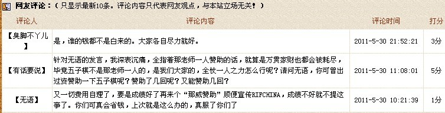

第12届世锦赛中国AT+QT人选
#1 第12届世锦赛中国AT+QT人选作者：励精 发表时间：2011-5-30 9:55:18
| 作者：RIFCHINA 文章来源：中国连珠网 更新时间：2011-5-30 | |
根据“第12届世界连珠锦标赛中国AT+QT名额选拔赛规程：……选手确定：原则上比赛前三名将取得第12届世界连珠锦标赛中国AT+QT名额。AT+QT选手最后确定：①在前三名中根据以往大赛成绩。②根据七月以前状态。确定两个直接进入AT及一个QT的人选。”及为了让棋手更早的进入备战。 |
［ 棋情 于 2011-5-30 22:06:03 时花1850金币砸了你37个臭鸡蛋］
［此帖子已被 有志青年 在 2011-5-30 22:23:02 编辑过］
［ 棋情 于 2011-5-30 22:28:28 时花1600金币砸了你32个臭鸡蛋］
［此帖子已被 有志青年 在 2011-5-31 7:56:53 编辑过］
#2 Re:第12届世锦赛中国AT+QT人选作者：励精 发表时间：2011-5-30 9:57:36
【励精注】
曹冬——两次全国冠军，一次亚军，一次季军；
黄金贤——中国香港五子棋第一人；
戴晓涵——最新一届全国季军。
祝中国代表队再显神威。
［ 茗弈小刀 于 2011-5-30 15:15:38 时奖励此帖[金币加 100 威望加1］
#3 Re:第12届世锦赛中国AT+QT人选作者：有志青年 发表时间：2011-5-30 10:41:16
都偏瘦
#4 Re:第12届世锦赛中国AT+QT人选作者：絕版賭徒 发表时间：2011-5-30 11:19:51
戴晓涵——最新一届全国季军。??????
为什么对小天没有成绩的回顾,而是最新一届全国季军??
呵呵,补充一下:
戴晓涵:
全国公开赛冠军1次，浙江赛冠军 2次(众所周知近两年浙江赛水平不亚于全国赛)，全团赛冠军2次,Type版五子棋积分排名第一
［ 踵酃 于 2011-5-30 14:02:20 时花20金币送鲜花一朵］
［ 讲五堂笑天 于 2011-5-31 15:11:00 时花20金币送鲜花一朵］
#5 Re:第12届世锦赛中国AT+QT人选作者：欧艾沃 发表时间：2011-5-30 12:34:18
可能RIF中国担心曹冬不能进去到AT从QT。。。原来中国AT+QT比赛没有意思了如果然后可以随便决定谁下在AT。#6 Re:Re:第12届世锦赛中国AT+QT人选作者：梧桐风 发表时间：2011-5-30 12:46:17
引用：被你发现了~
原文由 欧艾沃 发表于 2011-5-30 12:34:18 :
可能RIF中国担心曹冬不能进去到AT从QT。。。原来中国AT+QT比赛没有意思了如果然后可以随便决定谁下在AT。

#7 Re:第12届世锦赛中国AT+QT人选作者：屏蔽 发表时间：2011-5-30 13:12:59
哥忽然表示毫无鸭梨［ 极地剑客 于 2011-5-31 1:25:14 时花20金币送鲜花一朵］
#8 Re:第12届世锦赛中国AT+QT人选作者：五子棋痴 发表时间：2011-5-30 13:13:23
RIFCHINA向来如此，没有直接把黄金贤戴小涵换成陈伟胡夕已经算积了大德了［ 絕版賭徒 于 2011-5-30 14:20:37 时花20金币送鲜花一朵］
#9 Re:第12届世锦赛中国AT+QT人选作者：絕版賭徒 发表时间：2011-5-30 13:18:11
哈哈,我难道真的看不懂这新闻????有点像在中国人面前玩汉字游戏,"中国人真的会被迷糊?为何外国的爱伏却看得明白?"呵呵
"虚构"疑惑: "①这次选拔赛第三名，上届世锦赛A组季军曹冬，直接进入AT。" 上届世锦赛A组季军是不是可以直接进AT,如果是,为何要参加选拔赛? 如果不是,为何要把上届世锦赛A组季军&直接进入AT联系到一块?那么也意味着①②③第一名,第二名,第三名,严重出错~!呵呵,还是个文字游戏?感觉不是太好玩~! 这回真出洋相了，洋人都看出来了，
［此帖子已被 絕版賭徒 在 2011-5-30 13:20:50 编辑过］
［ 踵酃 于 2011-5-30 14:04:41 时花20金币送鲜花一朵］
#10 Re:第12届世锦赛中国AT+QT人选作者：萧何 发表时间：2011-5-30 13:51:02
据说AT免费，QT要报名费。。。［ 絕版賭徒 于 2011-5-30 14:19:41 时花20金币送鲜花一朵］
#11 Re:第12届世锦赛中国AT+QT人选作者：有志青年 发表时间：2011-5-30 13:57:15
11楼是猛料
#12 Re:Re:第12届世锦赛中国AT+QT人选作者：小丸.net 发表时间：2011-5-30 13:59:27
引用：并不是爱伏看明白了而中国人没有看明白。。。。而是：中国人看明白了！但是无济于是。。。有什么用呢！
原文由 絕版賭徒 发表于 2011-5-30 13:18:11 :哈哈,我难道真的看不懂这新闻????有点像在中国人面前玩汉字游戏,"中国人真的会被迷糊?为何外国的爱伏却看得明白?"呵呵
"虚构"疑惑: "①这次选拔赛第三名，上届世锦赛A组季军曹冬，直接进入AT。" 上届世锦赛A组季军是不是可以直接进AT,如果是,为何要参加选拔赛? 如果不是,为何要把上届世锦赛A组季军&直接进入AT联系到一块?那么也意味着①②③第一名,第二名,第三名,严重出错~!呵呵,还是个文字游戏?感觉不是太好玩~! 这回真出洋相了，洋人都看出来了，
［此帖子已被 絕版賭徒 在 2011-5-30 13:20:50 编辑过］
#13 Re:第12届世锦赛中国AT+QT人选作者：励精 发表时间：None
说句客观的话，不要因为我的解释向我拍砖，我怕疼。
以下摘自RIF《世锦赛资格制》：
National Place - There are seats that are given to a Nation, not to a player particularly. The national federation of the country will decide which player gets the seat. Usually, the democratic principle is followed, and the country will arrange the National Qualification Tournament and that will determine the player who gets the Seat.
[翻译]：国家名额 - 这些席位是给国家的，不是给棋手个人的，国家的联盟组织决定哪些棋手得到这些席位。通常采用民主的原则，国家安排本国的选拔比赛以确定获得席位的棋手。
1、我的理解是，RIF把这2个AT席位安排给RIFCHINA来决定，RIF对各国的选拔赛也只是说“通常”，并没有强制。因此RIF也无权干涉各国的“内政”，其他人更没权力对RIFCHINA的决定指手划脚。
2、中国选拔赛在赛前的规程中也有明确说明，“原则上比赛前三名将取得第12届世界连珠锦标赛中国AT+QT名额。”并没有指定一定是第一第二进AT，如果对规程有异义，赛前可以问明甚至可以拒赛，既然参加了选拔赛，就是对规程的认可。因此RIFCHINA的决定应该没有问题。
by:web版  IP：
已记录
IP：
已记录
#14 Re:第12届世锦赛中国AT+QT人选作者：絕版賭徒 发表时间：2011-5-30 14:05:43
讽刺,讽刺,纯属讽刺~!#15 Re:第12届世锦赛中国AT+QT人选作者：屏蔽 发表时间：2011-5-30 14:11:55
大家都不傻，14楼何苦跳出来解释。
若真是光明磊落，为何rifchina的首页上不敢把这消息挂个显眼？
［ 絕版賭徒 于 2011-5-30 14:20:19 时花20金币送鲜花一朵］
［ 踵酃 于 2011-5-30 14:34:56 时花20金币送鲜花一朵］
#16 Re:第12届世锦赛中国AT+QT人选作者：小元 发表时间：2011-5-30 14:15:34
楼上曾经是RIFchina的牺牲品，作为旁观者表示同情一下
#17 Re:第12届世锦赛中国AT+QT人选作者：絕版賭徒 发表时间：2011-5-30 14:16:58
回复【励精】我的讨论与你发表的东西无关的,呵呵
坐在电脑边无聊,所以妄想开着黑石和终结者穷尽一下伟大的RIFCHINA处事风格
#18 Re:Re:第12届世锦赛中国AT+QT人选作者：屏蔽 发表时间：2011-5-30 14:17:00
引用：
原文由 小元 发表于 2011-5-30 14:15:34 :楼上曾经是RIFchina的牺牲品，作为旁观者表示同情一下
同志不要杜撰……我站在事实说话。总体而言rifchina待我不错。
［此帖子已被 屏蔽 在 2011-5-30 14:17:51 编辑过］
#19 Re:Re:Re:第12届世锦赛中国AT+QT人选作者：小元 发表时间：2011-5-30 14:19:44
引用：既然楼上自己这样认为，那就不好说什么了，祝你好运
原文由 屏蔽 发表于 2011-5-30 14:17:00 :引用：
原文由 小元 发表于 2011-5-30 14:15:34 :楼上曾经是RIFchina的牺牲品，作为旁观者表示同情一下
同志不要杜撰……我站在事实说话。总体而言rifchina待我不错。
［此帖子已被 屏蔽 在 2011-5-30 14:17:51 编辑过］
#20 Re:Re:第12届世锦赛中国AT+QT人选作者：小丸.net 发表时间：2011-5-30 14:31:47
以下摘自RIF《世锦赛资格制》：
National Place - There are seats that are given to a Nation, not to a player particularly. The national federation of the country will decide which player gets the seat. Usually, the democratic principle is followed, and the country will arrange the National Qualification Tournament and that will determine the player who gets the Seat.
[翻译]：国家名额 - 这些席位是给国家的，不是给棋手个人的，国家的联盟组织决定哪些棋手得到这些席位。通常采用民主的原则，国家安排本国的选拔比赛以确定获得席位的棋手。
通常采用民主的原则，什么是民主，民主即：在一定的阶级范围内，按照平等和少数服从多数原则来共同管理事务的制度。由RIFCHINA的决定得出:RIFCHINA并不民主。这个大家都是明眼人，不需要解释。也许RIF的解释是：民主----我为人民作主。
1、我的理解是，RIF把这2个AT席位安排给RIFCHINA来决定，RIF对各国的选拔赛也只是说“通常”，并没有强制。因此RIF也无权干涉各国的“内政”，其他人更没权力对RIFCHINA的决定指手划脚。
问题就是出在这个通常两个字上，而RIFCHINA就是走的非“通常”的路线。一次如此，第二次还是如此，相信还有第三次，第四次。。。。这个也是解释了上面RIFCHINA“非民主”的原因。2、中国选拔赛在赛前的规程中也有明确说明，“原则上比赛前三名将取
#21 Re:第12届世锦赛中国AT+QT人选作者：小元 发表时间：2011-5-30 14:36:23
等五子棋啥时候发展到国足规模的时候，相信国家会出面和谐的。#22 Re:第12届世锦赛中国AT+QT人选作者：游戏人间 发表时间：2011-5-30 15:38:40
日期:2011-5-7
第十四剑 20:31:02
在吗
冬 20:32:30
在
第十四剑 20:32:45
据说让小天去打QT？
冬 20:33:11
没定呢吧
第十四剑 20:34:00
希望吧。。他本来就没钱。。去打QT的话万一失手进不去A组费用估计都出不起。。而且他的体力根本不足以支持从QT开始全部的比赛。。。
第十四剑 20:34:32
还不如让更有钱的小黄去呢。。。
冬 20:35:26
哪回头看看黄什么意思吧
第十四剑 20:35:45
恩。钱很关键。。你是有赞助吧？小黄估计有钱呵呵
冬 20:36:08
恩
冬 20:36:20
小天一点赞助都没有啊
第十四剑 20:36:24
没有
第十四剑 20:36:30
唯一的赞助是我给的3000
第十四剑 20:36:37
我赞助的他。。明白了吧
冬 20:36:46
。。。
第十四剑 20:38:17
再从另外一个角度考虑。。。
第十四剑 20:38:22
可能我说的不太好听
冬 20:38:51
你讲。。
第十四剑 20:39:10
A组名额有一个是我争取来的。也是我保住的。理所当然应该由我的弟子或者和我有关系的优先吧
第十四剑 20:39:40
我跟黄没有任何关系。。。这你也知道的。。那凭什么让黄直接进A呢？
冬 20:39:52
呵呵，也有道理啊
第十四剑 20:40:43
我只是客观的说出来我的想法。。你们之间协商。。。就好比殷老师得到的A组名额。。然后让我去的话你心里也不舒服对不对
冬 20:41:15
哎。。回头再商量吧上面这个聊天记录是5月7号我和曹冬的聊天记录。说明RIFCHINA在很早以前就已经内定了此事，估计没人帮小天说话。其实孙励精老师说的话很有意思，假设不谈浙江赛，那么从最近一两年的中国棋院认可的比赛角度来分析，我也想不出曹冬和黄金贤比小天成绩哪里高了。请随便举例，可以毫不夸张的说从09年智运会后中国状态最好的棋手就是戴晓涵，其他谁的综合成绩也无法比拟。所以内定就是内定了，哪找那么多的借口。鉴于这种情况，我会建议小天拒绝出赛的。上届世锦赛就内定了一次，这次小天按照规矩又报名跑北京参加预选，又努力寻找赞助，但是依然内定，依然没他的资格。难倒是对小天的歧视吗？既然这比赛那么难去。那么那威俱乐部自己去玩吧，我们外地棋手没兴趣奉陪了。五子棋希望在那威俱乐部的手中发扬光大。在这里本人声明以后拒绝参加任何RIF举办的比赛。并且建议RIFCHINA改名为RIFBJ，请不要侮辱了中国这个神圣的名字！！！！
［ 絕版賭徒 于 2011-5-30 15:44:39 时花20金币送鲜花一朵］
［ 堂堂 于 2011-5-30 15:50:08 时花20金币送鲜花一朵］
［ 屏蔽 于 2011-5-30 16:02:45 时花20金币送鲜花一朵］
［ 战乱 于 2011-5-30 17:21:57 时花20金币送鲜花一朵］
［ 战乱 于 2011-5-30 17:26:17 时花20金币送鲜花一朵］
［ 怪 于 2011-5-30 19:05:08 时花20金币送鲜花一朵］
［ 踵酃 于 2011-5-30 23:43:47 时花20金币送鲜花一朵］
［ 周光乐 于 2011-5-30 23:50:08 时花20金币送鲜花一朵］
［ 嵯峨 于 2011-6-5 15:50:28 时花20金币送鲜花一朵］
［ 梦婷 于 2011-6-6 14:58:38 时花20金币送鲜花一朵］
#23 Re:第12届世锦赛中国AT+QT人选作者：有志青年 发表时间：2011-5-30 15:41:33
深度挖掘……#24 Re:第12届世锦赛中国AT+QT人选作者：游戏人间 发表时间：2011-5-30 15:42:58
小天对黄金贤的战绩目前没找到。但我知道的是去年全国锦标赛和今年RIFCHINA世锦赛预选赛戴晓涵两胜曹冬。试问谁的状态更好？
#25 Re:第12届世锦赛中国AT+QT人选作者：堂堂 发表时间：2011-5-30 15:50:32
鲜花送不完，对你爱不完
#26 Re:第12届世锦赛中国AT+QT人选作者：小丸.net 发表时间：2011-5-30 15:50:57
=======上图对应的爱五子棋谱代码如下，以便你拆解：========
h8h7h10g6g10g7i7i8f5g9g8h6f8i10f9h11j9e6f6f7e8d8d7c6e10f11g11f12k9i9f13d11l10k6j8m11j7j6i6h12d10f10i12l9h4i3k5m8l7j11m10m7k10n10k12k11l11j13m12n13l12j12j14c7c5e11d12j3m6h14i13f3g2b6e9d6a6c11b11e5f4g3h3g4g5b7
======================================================
第七届浙江五子棋公开赛A组戴晓涵执白86手胜黄金贤。。#27 Re:第12届世锦赛中国AT+QT人选作者：游戏人间 发表时间：2011-5-30 15:52:52
大概又搜索了一下，请问黄金贤和曹冬在这一两年赢过戴晓涵吗？对成绩比较了解的人告诉我下。。。#28 Re:第12届世锦赛中国AT+QT人选作者：棋峰 发表时间：2011-5-30 15:58:26
我是贺启发，大鱼你如果不把这些发出来，我是绝对没异议的。暗地操作的事情我是绝对不会去发表任何意见，既然你把你的这些关系摆出来说了，我作为黄金贤的师傅，我也应该为他争取，他应该得到的名额。戴晓涵的2次浙江赛的冠军是怎么来的，需要我一五一十的去说出来吗？我是被围攻的对象，09 年的浙江赛如果不是风尘最后一轮放戴晓涵，他连前八都进不了，公开赛的冠军，也是有人帮他托，他敢真正意义的挑战他的对手吗？黄金贤全国赛上没有拿过前三，但是他第一名的预选成绩就足够说明问题了，难道因为人家有钱就应该去打QT吗？那还不如让那威先生去打呢，我想那威先生这点小费用还是无所谓的［此帖子已被 棋峰 在 2011-5-30 15:59:10 编辑过］
［此帖子已被 棋峰 在 2011-5-30 16:00:57 编辑过］
［ 嗯嗯嗯 于 2011-5-30 23:22:36 时花20金币送鲜花一朵］
［ 极地剑客 于 2011-5-31 1:30:20 时花20金币送鲜花一朵］
［ 圊籽 于 2011-6-2 15:18:25 时花20金币送鲜花一朵］
#29 Re:第12届世锦赛中国AT+QT人选作者：游戏人间 发表时间：2011-5-30 15:58:47
楼上的以后说话注意点，不是RIFCHINA是RIFBJ。。。
#30 Re:第12届世锦赛中国AT+QT人选作者：游戏人间 发表时间：2011-5-30 16:00:29
好既然白痴也出来说话了。那请问你觉得这三个人哪两个应该上AT呢？呵呵
#31 Re:第12届世锦赛中国AT+QT人选作者：游戏人间 发表时间：2011-5-30 16:05:51
还有三落你提到了小天比赛夺冠都是暗箱操作的事情。那么请问其他棋手有多少个是没有暗箱操作的？再换个说法，就拿去年浙江赛来说，小天怎么夺冠你和我都清楚。那么请问如果没有前面的连胜最后就算有操作他有机会夺冠吗？那么黄金贤在浙江赛是第几？曹冬根本没浙江赛A组的资格。全国赛黄金贤第几？曹冬第几？我想无论从哪个成绩上都不可能是小天去打QT。
如果严格按照预选来说那么是曹冬去打QT。
#32 Re:第12届世锦赛中国AT+QT人选作者：游戏人间 发表时间：2011-5-30 16:09:00
但是我们的曹冬大师会愿意去打QT吗？其实以我对曹冬的了解，如果都说开了他会愿意去的。但是就算他愿意去RIFBJ会同意吗？所以最后的结论又回到对RIFBJ的不公正的抨击上。你可以为你的学生黄金贤争取，这没问题。我也可以为我的好友戴晓涵争取。但是你觉得现在有争取的机会吗？
#33 Re:第12届世锦赛中国AT+QT人选作者：海月 发表时间：2011-5-30 16:09:05
我去行不
［ 极地剑客 于 2011-5-31 1:31:52 时花20金币送鲜花一朵］
#34 Re:第12届世锦赛中国AT+QT人选作者：游戏人间 发表时间：2011-5-30 16:14:48
很希望曹冬看到帖子自己出来说说到底是怎么回事。我不想恶意的猜测。但是现在进AT的一个是那威俱乐部自己培养的棋手，一个是在北京念书经常去那威俱乐部的棋手。而一个对他们两个保持不败的棋手却被放进了QT。呵呵真的很有意思的逻辑，当世锦赛是团体赛田忌赛马呢？？？？？？？？？？？？？
#35 Re:第12届世锦赛中国AT+QT人选作者：棋峰 发表时间：2011-5-30 16:16:22
我也同意你的提议，曹冬打QT，毕竟他是第三，但是RIF中国方面会这样办吗》难道因为一个有钱和一个没钱就把第一名拉掉吗？事实如此摆在这里，第一名的意义在哪里。你不能把没发生的事情去做比较，最起码黄金贤的成绩是靠自己的努力打出来的。他每天在进步，年轻有为的青年得到了这样的锻炼机会，如果被这样给扼杀了的话，你觉得你对不起你自己的良心吗？在这里我只是希望大鱼你也不要再去向曹冬提意见了，我们就等待RIF中国的决定吧。上次我也说过基本上暗箱操作的事情很难杜绝，我不支持也不反感。习惯了就好，希望你不要利用你在五子棋的关系和威信去插手这样 的事情，否则你的威信会一点点的减少的。在爱好者里，你是中国五子棋的骄傲，不要忘了，你能影响更多的爱好者#36 Re:第12届世锦赛中国AT+QT人选作者：有志青年 发表时间：2011-5-30 16:21:21
如果三位棋手之间起了争执，我想这是大家最不愿意看到的。
问题的根源在于rifchina处理此问题有私心，却没有在游戏开始时公开完整的游戏规则。
棋手，此时只是个棋子而已。
#37 Re:第12届世锦赛中国AT+QT人选作者：欧艾沃 发表时间：2011-5-30 16:24:37
我同意跟吴镝。RIFChina该变名字到RIFBeijing。可能这也不是好的办法因为都北京的下棋人，我觉得没有好关系跟RIFChina（Beijing）。I can explain a little bit how this qualification system works. Firstly, you need to have a firm system in place. RIF China does not have a system whatsoever. Alright, I understand if they say that they took into consideration the previous results +AT+QT tournament result. Still, what results did they consider? I will explain how the system works in Russia. The first AT place goes to the National Champion (this went to Sergei Artemyev), then the second place goes to the winner of The Tournament of Ten (Basically QT). Then the third place goes to the person, who gets the best scores in the period between the last World Championships and the Tournament of Ten ( Tournament of Ten was won by Konstantin Nikonov, so he got a place in QT, the player, who had the best overall score in 2 years was Evgeny Sumarokov, so he also got a place in QT). So, the fact that Cao Dong got 3rd place on the last WC, does not matter. If you combine the scores from Chinese tournaments after the WC 2009 and before 2011 AT+QT tournament, then you can see that Dai Xiaohan has the best results. Cao Dong can say that he helped China (Beijing) to win TWC, still, Dai Xiaohan has better results than Cao Dong and Huang Jinxian during this period. What I am trying to say is, no matter how you look at it, this selection was not fair at all. RIF China once again supported their own player. Now, it will be interesting to see what teams (China can participate with 3 teams)will participate in next year's TWC in China. If we look at the results of this year's Chinese team competition results, it should mean that Beijing should be represented with 0 teams since their best teams got only 9th and 10th place in the Men's competition. No matter how you look at it, Beijing cannot put out a very strong team compared to other places in China. Of course, RIFChina can say that it is their decision to make, who will represent China in international title competitions but RIF is not dumb. Eventually this kind of behavior will come back to bite you. I have nothing against Cao Dong, Huang Jinxian or the people, who work in RIFChina. I do however have a serious problem how the decisions are made since I am a member of RIF Sports Commission, which deals with RIF International Tournament rules etc. I have some ideas how to make this qualification fair for everybody but that is unfortunately unachievable at the moment. This post is my personal opinion and my opinion only, it has nothing to do with what any other European players or RIF members think. I am just tired of watching this situation going on and on. It has to stop at some point. It is especially ridiculous taken into consideration that the number of players in RIFChina is probably less than 1% from all the Chinese renju players together. I will do my best to find some kind of solution to this problem. I understand that a lot of the blame is also on RIF for not being active enough in the matters of Chinese renju.［ 路痴 于 2011-5-30 16:31:32 时花20金币送鲜花一朵］
［ 杨文浩 于 2011-5-30 17:52:37 时花20金币送鲜花一朵］
［ 棋道无尽 于 2011-5-31 12:16:51 时花20金币送鲜花一朵］
［ 棋道无尽 于 2011-5-31 12:17:22 时花20金币送鲜花一朵］
［ 棋道无尽 于 2011-5-31 12:17:46 时花20金币送鲜花一朵］
［ 棋道无尽 于 2011-5-31 12:17:57 时花20金币送鲜花一朵］
［ 棋道无尽 于 2011-5-31 12:18:13 时花20金币送鲜花一朵］
#38 Re:第12届世锦赛中国AT+QT人选作者：絕版賭徒 发表时间：2011-5-30 16:26:29
我神啊,求优质翻译软件
#39 Re:Re:第12届世锦赛中国AT+QT人选作者：游戏人间 发表时间：2011-5-30 16:31:33
引用：
原文由 棋峰 发表于 2011-5-30 16:16:22 :
我也同意你的提议，曹冬打QT，毕竟他是第三，但是RIF中国方面会这样办吗》难道因为一个有钱和一个没钱就把第一名拉掉吗？事实如此摆在这里，第一名的意义在哪里。你不能把没发生的事情去做比较，最起码黄金贤的成绩是靠自己的努力打出来的。他每天在进步，年轻有为的青年得到了这样的锻炼机会，如果被这样给扼杀了的话，你觉得你对不起你自己的良心吗？在这里我只是希望大鱼你也不要再去向曹冬提意见了，我们就等待RIF中国的决定吧。上次我也说过基本上暗箱操作的事情很难杜绝，我不支持也不反感。习惯了就好，希望你不要利用你在五子棋的关系和威信去插手这样 的事情，否则你的威信会一点点的减少的。在爱好者里，你是中国五子棋的骄傲，不要忘了，你能影响更多的爱好者三落我们认识也有5年了吧，你觉得我是很爱惜羽毛的人吗？呵呵别说只是拿过一个世锦赛冠军就是和中村一样连续十几次名人我也依然是有啥说啥。就比如第一届智运会我对你之前发生的事情，我和很多人都说过。因为我没觉得这有什么的。毕竟五子棋只是一个不成熟的运动。所谓的威信也就是那么回事。黄金贤目前能拿出手的只有预选赛第一，这也是唯一能作为他进A组的凭据。而戴晓涵是第二，那么按照预选赛规则他也是直接进A的。但是现在曹冬进去了，属于内定的结果。既然已经内定了曹冬那么为什么另外两个还选了黄而不是戴呢。因为黄在北京念书，经常去那威俱乐部参与比赛。想必这是那威俱乐部按照亲疏来区别对待的结果。事实上我记得预选赛前有一条说明是说根据近期状态来选拔。那么曹冬和黄的状态都比小天好吗？或者说他们两个近期赢过戴晓涵吗？客观点说小天除了心理不成熟所以始终面对你这样的顶级棋手有压力以外，他对其他人我想取胜概率都是极高的，就算是你想赢小天也是需要一定运气成分的。这样的棋手去打预选你也觉得可以接受吗？
这里本来就不是想和你争辩什么，因为你支持你的学生这很正常。反过来我支持我的朋友也是很正常的。不正常的是在我抨击RIFBJ的时候你出来和我说这些。
#40 Re:第12届世锦赛中国AT+QT人选作者：有志青年 发表时间：2011-5-30 16:32:01
尊敬的主席阁下：
中国自1996年加入国际连珠联盟以来已经有十个年头了。在此期间，国际连珠联盟中国事务部作为国际连珠联盟的成员，组织了六次国际性的比赛，并开展电视授课及宣传已达六年之久。由于我们的工作，使得数以万计的中国人投入到这项运动中。国际连珠联盟中国事务部对连珠事业的贡献是显而易见的。
鉴于中国棋院已经接管了五子棋项目，应该由中国棋院决定，是否继续保留国际连珠联盟成员国的资格。因此，国际连珠联盟中国事务部决定，将于下一届国际比赛结束日，即2007年8月以后退出国际连珠联盟，并终止其职责。
在与中国棋院交接过程中，国际连珠联盟中国事务部将承办如下事务：
1 组织2007年世界杯中国区资格赛
2 组织全国性公开赛最近，爱沙尼亚的Ants Soosyrv先生在中国的连珠选手中做了一份调查，称国际连珠联盟中国事务部以及我本人不团结中国棋手。我代表国际连珠联盟中国事务部，向Ants Soosyrv先生的辛勤工作以及其对中国连珠选手的支持表示感谢。然而，中国的复杂性和多样性连中国人自己都无法说清。Soosyrv先生（包括另一位爱沙尼亚棋手）的好意，却在中国棋手中引起震动。中国棋手间形成较为困难的复杂局面。平等交往，不干涉他人内政的原则不仅是国与国间处理外交事务的准绳，其更适用于人与人之间的普通交往。我感谢大家能理解这一点.中国的内部事务还是交由中国人自己处理吧。
国际连珠联盟中国事务部将在未来的十一个月中履行完其职责。期间将会发生很多棘手问题需要妥善处理。因此，我希望得到您以往的理解与支持，并同样得到国际连珠联盟其他成员国的理解与支持，共同帮助中国提高到更高一个层次上。
祝好！
那威
国际连珠联盟中国事务部主席
2006年9月1日原文地址http://www.rifchina.com/Article/ShowArticle.asp?ArticleID=3733
［此帖子已被 有志青年 在 2011-5-30 16:40:17 编辑过］
#41 Re:第12届世锦赛中国AT+QT人选作者：棋峰 发表时间：2011-5-30 16:32:17
在这里我向大鱼道歉，同样也向戴晓涵道歉，我刚才语气态度确实很差，我也基本上没在论坛上讨论过什么。我们都不能改变RIFBJ的决定，毕竟他不是官方。只是我觉得不应该把有钱和没钱作为谁去AT的决定，这样真的是太草率了。我觉得我现在是水平已经下不过黄金贤了，按实力来说，三个人都有资格打AT。我只是看见你和曹冬的对话谈到因为有钱没钱来说意见，我觉得这个着实不应该。对于你否定RIFBJ的做法，我是不发表意见的，爱五子棋网我还是第二次回复。［此帖子已被 棋峰 在 2011-5-30 16:36:56 编辑过］
［ 有志青年 于 2011-5-30 16:39:22 时奖励此帖[金币加 100 威望加1］
［ 屏蔽 于 2011-5-30 18:13:45 时花20金币送鲜花一朵］
［ 怪 于 2011-5-30 19:15:23 时花20金币送鲜花一朵］
［ 小红眼镜 于 2011-5-30 21:27:31 时花20金币送鲜花一朵］
［ 嗯嗯嗯 于 2011-5-30 22:50:22 时花20金币送鲜花一朵］
［ 极地剑客 于 2011-5-31 1:33:42 时花20金币送鲜花一朵］
［ 一期一会 于 2011-5-31 9:12:55 时花20金币送鲜花一朵］
［ 黄药师 于 2011-5-31 11:16:46 时花20金币送鲜花一朵］
［ 圊籽 于 2011-6-2 15:39:01 时花20金币送鲜花一朵］
#42 Re:第12届世锦赛中国AT+QT人选作者：游戏人间 发表时间：2011-5-30 16:40:30
有钱和没钱看起来似乎确实不是什么很严重的理由。。。但是看过我07年世锦赛棋评的人就应该看到当时如果我打不进A组就面临没钱吃饭的地步。小天的经济状况恐怕还不如那时候的我。。而且去的是消费更高的瑞典。所以我觉得有钱和没钱在这次的世锦赛是一个很严重的理由。。#43 Re:第12届世锦赛中国AT+QT人选作者：猪小弟 发表时间：2011-5-30 16:40:56
好久没看到这么热闹的帖子了
#44 Re:第12届世锦赛中国AT+QT人选作者：棋峰 发表时间：2011-5-30 16:45:05
事实上有钱没钱真不是什么争论的理由，如果他个人经济在此行中真的比较困难，那么我提议站长为戴晓涵做一个赞助贴，我想我个人也愿意尽我的绵薄之力#45 Re:第12届世锦赛中国AT+QT人选作者：游戏人间 发表时间：2011-5-30 16:45:47
我亲身经历过在国外面临没钱的境地。。我不想中国的棋手再次面对这种窘境。所以在我看来有赞助的曹冬和更有钱一些的黄金贤更应该去打QT。因为他们没有后顾之忧。
#46 Re:第12届世锦赛中国AT+QT人选作者：棋峰 发表时间：2011-5-30 16:53:56
问题出在RIFBJ，我和曹冬的关系也非常的好。但是如果让一个第一降级了，成绩就真的什么都不是了，大鱼我很抱歉，我刚才只看了你的聊天记录，并没看你下面的那段话。在这里表示歉意#47 Re:第12届世锦赛中国AT+QT人选作者：游戏人间 发表时间：2011-5-30 17:00:18
恩。。那就是你也支持改名叫RIFBJ了吧？呵呵。。。这名称还算恰当点。说句实话。。我没夺冠前这世锦赛都没人愿意去。自然也没人争名额。。我夺冠回来了立刻去世锦赛变成热门的了。。。
#48 Re:第12届世锦赛中国AT+QT人选作者：欧艾沃 发表时间：2011-5-30 17:01:20
你们不明白，没去过瑞典。对我瑞典也很贵的国家。如果我没有RIF爱沙尼亚的帮助，不可以参加AT。我不要买贵的飞机票可是住在瑞典比一个星期多已经要很多钱。一般瑞典的价钱比中国的十次贵。。。好，比赛的时候可以住在教室，这是免费。可是从中国已经飞机票+汽车票差不多10000RMB。。。我知道可以拿很多方便面等等从中国可是如果没参加过AT比赛，不明白这比赛很难。一个星期的时候有11盘棋。有的棋比5个小时张的。所以有的天一共10小时只下棋。该决定你要休息，准备或者睡觉。。。对身体这比赛真的不好。如果也要参加QT，是10天的时候一共18盘棋。。。［ 极地剑客 于 2011-5-31 1:34:53 时花20金币送鲜花一朵］
［ 中中 于 2011-5-31 19:41:38 时花20金币送鲜花一朵］
#49 Re:第12届世锦赛中国AT+QT人选作者：有志青年 发表时间：2011-5-30 17:04:24
因此，对戴的体质表示担忧。如何撑得下去？棋外的干扰太多了。#50 Re:第12届世锦赛中国AT+QT人选作者：絕版賭徒 发表时间：2011-5-30 17:11:42
责难改为唾骂应该更好#51 Re:第12届世锦赛中国AT+QT人选作者：杨文浩 发表时间：2011-5-30 17:25:57
选手确定：原则上比赛前三名将取得第12届世界连珠锦标赛中国AT+QT名额。AT+QT选手最后确定：①在前三名中根据以往大赛成绩。②根据七月以前状态。确定两个直接进入AT及一个QT的人选。
如果真是按照这个原则来选AT名额的话，我真不知道是怎么把戴晓涵选到QT里去的。
我们来看看吧，他们的决定：
RIFCHINA经研究决定：①这次选拔赛第三名，上届世锦赛A组季军曹冬，直接进入AT。
②这次选拔赛第一名黄金贤进入AT。
③这次选拔赛第二名戴晓涵参加A组资格预赛QT，为中国争取第三个AT名额。他们的所谓的研究，第一个考虑的就是曹冬，上届世锦赛A组季军说明什么呢？说明这次去也一定能够拿季军或是更好？还是说这代表着7月前状态好？那么今年7月以前状态好，是不是也包括大鱼夺冠那时的状态呢？那时谁的状态更好呢？单凭一个上届世锦赛A组季军，说明不了问题，虽然我也承认算是一个重量级的成绩，但太单一，而且时间相对较远。黄金贤以预选第一进AT，这个没得说，但是如果完全以预选成绩为标准的话第二的戴晓涵也应该进吧？如果要以状态来论的话，我只能说我很难评价，如果我拿出一些比赛成绩来说的话，或许会有人说比赛成绩也不能说明所有问题，还会有人来质疑这三位选手的成绩。我实在无意来评价这三位选手的优劣，或许以不同的选择标准会得出不同的答案，但偏偏RIFCHINA要用“状态”这样一个模糊的概念作为标准来选择，同时又没有给出一个明确的对三个选手“状态”的一个评价（我个人的理解是，原帖2L只是励精老师的个人看法，RIFCHINA并没有给出一个明确的评价）。这难道正是RIFCHINA的一种策略？认为选择标准模糊了，那么他们选择的理由就可以想怎么解释就这么解释了。但我试着站在RIFCHINA的角度，用各种理由想这个问题，都得不到答案，只有一个理由能解释的通，就是只靠“感情”来处理问题。这很难跟所谓的“民主”对上号啊，这样一个组织能够代表中国五子棋吗？值得所有五子棋爱好者拥护吗？或许“他”心里也想着：我用不着被一些无名小辈拥护着吧！
还有，各位前辈们，不要为了谁该去QT而争了，这样不和谐，而且在我看来，这三位选手都是我值得尊敬的，而且都是值得大多五子棋爱好者学习的，他们谁去了QT都是一种冤屈。而且你们这一争过去争过来，伤了和气不说，又不会对这个事的结果带来太大影响，更重要的是，还说了一些不应该让广大五子棋爱好者看到的“内幕”，爱好者们都是纯真的，说这些多让人心寒啊，我也是第一次听到说比赛做假什么什么的，不管是不是真的，听起来总给人不爽的感觉。
#52 Re:第12届世锦赛中国AT+QT人选作者：欧艾沃 发表时间：2011-5-30 17:28:21
“我等着看这样的事情一次又一次发生”翻译不对。我的意思是，我已经看过很多次RIFChina的决定对别的中国下棋的人不公平。最后的句子，我想说RIF也应该跟RIFChina比现在多联系等等。但是决定谁参加在国际的比赛只是一个问题。。。#53 Re:Re:第12届世锦赛中国AT+QT人选作者：萧何 发表时间：2011-5-30 17:30:48
其实我觉得楼上中文挺好的。。。［ 极地剑客 于 2011-5-31 1:35:30 时花20金币送鲜花一朵］
#54 Re:第12届世锦赛中国AT+QT人选作者：杨文浩 发表时间：2011-5-30 17:39:29
非常赞同大鱼老师RIFBJ的叫法，这种声讨和抵制的方法创新且具有讽刺性，至于能不能有效，就得看RIFBJ要不要这个脸面了。
----另外我想说，这是我第一次在论坛上对某一组织发表看法，爱五子棋网不会制止我吧
#55 Re:第12届世锦赛中国AT+QT人选作者：战乱 发表时间：2011-5-30 17:49:00
我想说。。。。RIFBJ 也不准确。 因为 还有一些北京棋手 并不是它能代表的！！！
#56 Re:第12届世锦赛中国AT+QT人选作者：杨文浩 发表时间：2011-5-30 17:56:32
他们这样的处事方式确实不能代表任何人，除非他们能拿出证据说他们并没有违背大多数五子棋爱好者的意愿且有大多数五子棋爱好者仍然支持他们，这根本不可能
#57 Re:第12届世锦赛中国AT+QT人选作者：淡月疏星 发表时间：2011-5-30 17:56:39
其实我觉得你们争来争去，曹东最难受。很显然感觉曹老师成了牺牲品，被夹在中间。大家这样讨论也影响棋手之间的和谐。现在注重的是五子棋的发展，那威俱乐部对中国五子棋前期的贡献是很大的，至于后来的暗箱操作，大家肯定不满，这个也是对棋手的不尊重。想说曹老师是最难受的，夹在中间。而那威俱乐部更应该反省下，否则真的难以在五子棋爱好者心中留个好印象
#58 Re:第12届世锦赛中国AT+QT人选作者：没事摆石子玩 发表时间：2011-5-30 18:13:10
关于这件事说说自己的看法吧。首先，这么内定AT的名额确实是不对的，也是很不可取和丢人的。RIFCHINA是历史原因造成的，如果不改变这种只维护北京利益的做法，是注定不能长久存在下去的。但是，对于大鱼以及TYPE力挺小天的说法有疑义。小天是大鱼钦点的中国最具有“统治力”的棋手对吧。 但是似乎除了你和少数人这么认为，我还真不知道别人也这么想。就如白痴老师所说，那两个浙江赛冠军说明什么了？是说明个人实力的高超还是团队的强大？ 我不知道，你们肯定比我知道得清楚。然后，大鱼又说，如果没有前面的连胜，最后放水有用吗？比赛有几次是没有猫腻的对不对？ 这就是合乎道理的逻辑么？ 可笑至极，如果真强大到足够一直连胜到比赛结束，干吗还要放水？别人还会质疑你的实力么？ 你们这些名人把这些不好的做法习惯成自然，似乎没有点团队反倒是不正常的，这真是中国五子棋的悲哀啊，当然 ，也不能够怪你们，国情造成的很大一部分。也不知道能否改观以后。对于TYPE所说小天对曹冬黄金贤全胜，是中国目前最强的。那么请问，小天和黄金贤近期下过几次？ 没记错就一次吧，样本如此之小你想说明什么？要这么说我还可以说小天输给过碰碰一盘，对碰碰全败，是不是碰碰就更有资格去AT了？ 扯得有点远，没有对小天不敬的意思，他目前至少是中国最好的棋手之一没有疑问，但是也不象你们说的那样没有之一对吧？ 最后说说曹冬，曹冬是我国内最佩服的棋手，也是我的好朋友。他实际上是比较单纯的一个棋手，只想享受比赛和下棋的乐趣，别的问题他很少考虑。出道10年来，大小冠军拿了那么多，我想不至于有人怀疑他的实力吧？ 举个最简单的例子，在曹冬状态最好的那几年，对很多高手是保持不败的，比如湖北的米兰和海月老师，直到最近米兰一次松月谱杀才第一次赢曹冬吧？近期曹冬团体赛也有7胜2和的成绩，在他来说状态还只一般。这是什么，我觉得这才是一名顶级高手应该具备的统治力。对于谁更该去AT我不发表过多的意见，选择的流程确实有失偏颇，期待RIFCHINA认识到这种错误。［此帖子已被 没事摆石子玩 在 2011-5-30 18:15:14 编辑过］
［此帖子已被 没事摆石子玩 在 2011-5-30 19:50:05 编辑过］
［ 潇洒 于 2011-5-30 20:08:39 时花20金币送鲜花一朵］
#59 Re:第12届世锦赛中国AT+QT人选作者：魔铃 发表时间：2011-5-30 19:34:02
可怜的反例有没资格去碍你咋滴 别乱跑题好不好 希望能讨论商量个好的解决办法来
祝三位大师比赛心情好胃口就好，身体倍儿棒，吃嘛嘛儿香，世锦赛棋妙无穷啊！
#60 Re:第12届世锦赛中国AT+QT人选作者：絕版賭徒 发表时间：2011-5-30 19:51:31
主题不是在讨论RIFBJ吗?66楼主题似乎也跑到宣武区去了……#61 Re:第12届世锦赛中国AT+QT人选作者：游戏人间 发表时间：2011-5-30 19:53:53
66楼的意思是曹冬违背常理直接进A是名正言顺的了？不知道你认识曹冬几年。但是我认识他11年了。我到现在都不相信他自己会心安理得的认为进A是公正公平的。只是他的性格注定他不会去说什么去做什么。所以你用那些成绩来说真的很没意思。尤其是这次是说近期状态不是讲历史。要是按照历史来说不是应该张进宇老师直接进A了？现在的曹冬和我一样早已不是当年的状态了，顺便说下团体赛小天在二台，贺启发在三台，朱建峰在几台？#62 Re:Re:第12届世锦赛中国AT+QT人选作者：励精 发表时间：2011-5-30 19:55:38
引用：哈哈，宣武区已经不存在了，现在是大西城的地面。
原文由 絕版賭徒 发表于 2011-5-30 19:51:31 :
主题不是在讨论RIFBJ吗?66楼主题似乎也跑到宣武区去了……#63 Re:第12届世锦赛中国AT+QT人选作者：絕版賭徒 发表时间：2011-5-30 20:00:32
既然自愿参与了选拔赛，就得按流程来做事，，，，，要么RIFBJ就别来这一套，完全可以先内定两位AT免选拔赛，然后其他人冠军争QT，这不就完事了嘛(这叫大动作，丢人丢彻底)，，，，，既然RIFBJ和棋手都自由有选拔赛这一流程，双方自愿，就别搞小动作，特丢人，，，，人家国足作假还瞒了几年才清查呢，这点小把戏一眼看穿了，没水准就别把中国的帽子戴在头上,还自费，笑死人，玩不起，管不起，养不起，就别成立什么RIFBJ［此帖子已被 絕版賭徒 在 2011-5-30 20:06:35 编辑过］
#64 Re:第12届世锦赛中国AT+QT人选作者：啊呆 发表时间：2011-5-30 20:01:24
87987654642132131321312164#65 Re:第12届世锦赛中国AT+QT人选作者：岑小鱼 发表时间：2011-5-30 20:02:09
学习了...............................................................................#66 Re:第12届世锦赛中国AT+QT人选作者：啊呆 发表时间：2011-5-30 20:02:38
终于能回帖了
67楼的碰碰MM 我比赛遇你两回被灭两回 我的心情很不好......
#67 Re:第12届世锦赛中国AT+QT人选作者：高飞 发表时间：2011-5-30 20:04:31
不知道为什么回不了贴，浪费了我好几百字
#68 Re:第12届世锦赛中国AT+QT人选作者：小丸.net 发表时间：2011-5-30 20:05:43
干脆说，今年RIF的比赛不选拔了，我们就选XXX，YYY，ZZZ三个人去，“RIFCHINA”报销所有费用。。。。也许这样，大家还能接受，用那些模棱两可的话来搪塞，越解释越黑。。。
大乔，徐晃，该你们出马了。。。。你们懂的。［此帖子已被 小丸.net 在 2011-5-30 20:09:08 编辑过］
#69 Re:第12届世锦赛中国AT+QT人选作者：棋峰 发表时间：2011-5-30 20:06:44
我好像二台哦
#70 Re:第12届世锦赛中国AT+QT人选作者：高飞 发表时间：2011-5-30 20:14:19
似乎像我不用打预选 我也可以去QT。不是有ants文章里有等级分前20都有资格QT。
这样对戴的确有点不公平，不过他第2的时候，我已经能想到他是QT。
如果有预选赛，就不要谈过去成绩。
要是按照俄罗斯的方法，也是可行的。但两种理由凑合在一起，肯定是说服不了众人。
现在木以成舟，RIFCHINA不会更改名单的。我对曹的处境也理解，这事情也不能怪他，毕竟RIFCHINA就是靠他撑着。
现在的解决办法是，戴确定还是以QT的身份去的话，资金上面有多大的缺口，可以告诉大家一下，可以用集资赞助的方式帮助一下。
我和戴都是完全以五子棋为业，收入是非常少的。所以我很了解他的处境。
忠心希望戴能够不放弃比赛，参加世锦赛，争取拿个冠军回来。
也希望中国的五子棋能发展起来。。。不要再出现这样那样不好的事情。
［此帖子已被 高飞 在 2011-5-30 20:20:34 编辑过］
［ 岑小鱼 于 2011-5-30 20:34:18 时花20金币送鲜花一朵］
#71 Re:第12届世锦赛中国AT+QT人选作者：清缘 发表时间：2011-5-30 20:28:12
我觉得本来就很公正，2楼的解释反而显得多余
上届自己争取的名额本来就是可以保住，如果大鱼要参加，我也觉得他是理所当然的进AT
至于QT的名额由预选产生，这没什么不对的
既使是曹冬不参加预选，他仍然有直接打AT的说服力
［ 淡月疏星 于 2011-6-5 14:20:46 时花20金币送鲜花一朵］
#72 Re:Re:第12届世锦赛中国AT+QT人选作者：屏蔽 发表时间：2011-5-30 20:32:57
引用：
原文由 清缘 发表于 2011-5-30 20:28:12 :我觉得本来就很公正，2楼的解释反而显得多余
上届自己争取的名额本来就是可以保住，如果大鱼要参加，我也觉得他是理所当然的进AT
至于QT的名额由预选产生，这没什么不对的
既使是曹冬不参加预选，他仍然有直接打AT的说服力
你没看出来啊没看出来，问题不在曹冬这里。
#73 Re:Re:第12届世锦赛中国AT+QT人选作者：岑小鱼 发表时间：2011-5-30 20:33:41
引用：
原文由 高飞 发表于 2011-5-30 20:14:19 :似乎像我不用打预选 我也可以去QT。不是有ants文章里有等级分前20都有资格QT。
这样对戴的确有点不公平，不过他第2的时候，我已经能想到他是QT。
如果有预选赛，就不要谈过去成绩。
要是按照俄罗斯的方法，也是可行的。但两种理由凑合在一起，肯定是说服不了众人。
现在木以成舟，RIFCHINA不会更改名单的。我对曹的处境也理解，这事情也不能怪他，毕竟RIFCHINA就是靠他撑着。
现在的解决办法是，戴确定还是以QT的身份去的话，资金上面有多大的缺口，可以告诉大家一下，可以用集资赞助的方式帮助一下。
我和戴都是完全以五子棋为业，收入是非常少的。所以我很了解他的处境。
忠心希望戴能够不放弃比赛，参加世锦赛，争取拿个冠军回来。
也希望中国的五子棋能发展起来。。。不要再出现这样那样不好的事情。
［此帖子已被 高飞 在 2011-5-30 20:20:34 编辑过］
这得多大的决心。。。。。。
#74 Re:第12届世锦赛中国AT+QT人选作者：絕版賭徒 发表时间：2011-5-30 20:34:23
拿大鱼举例好了
:即使是不参加预选，他仍然有直接打AT的说服力
那如果自愿参加了呢?
RIFBJ能力问题，与棋手无关
［此帖子已被 絕版賭徒 在 2011-5-30 20:35:38 编辑过］
#75 Re:第12届世锦赛中国AT+QT人选作者：冰魔 发表时间：2011-5-30 20:36:47
我觉得不公平。按规则，按实力，按中国人的情理（当然RIF那威俱乐部的情理就不同了）都不该是这样排名
#76 Re:第12届世锦赛中国AT+QT人选作者：就是爱玩 发表时间：2011-5-30 20:37:25
I也算是下五子棋的老玩家了，就没见过五子棋届和五子棋游戏平台消停过。
还是那句话：不下五子棋真的对了？
［此帖子已被 就是爱玩 在 2011-5-30 20:39:58 编辑过］
#77 Re:第12届世锦赛中国AT+QT人选作者：小丸.net 发表时间：2011-5-30 20:40:38
状态好？倒是想问下：现在谁的状态好？？？
［此帖子已被 小丸.net 在 2011-5-30 20:41:04 编辑过］
#78 Re:第12届世锦赛中国AT+QT人选作者：清缘 发表时间：2011-5-30 20:41:31
回复82:如果大鱼自愿参加,RIF不同意,那我觉得就是RIF的问题
现在的处理我没有觉得有什么问题
可以这么说,无论是谁打QT都会有人为他们之中的一个抱不平的,小天只不过是这次的牺牲品而已,用钱和体力来做理由我觉得很牵强.希望他能在这次比赛中发挥好一点,为中国争光吧
［ 潇洒 于 2011-5-30 20:46:35 时花20金币送鲜花一朵］
［ 极地剑客 于 2011-5-31 1:37:57 时花20金币送鲜花一朵］
#79 Re:第12届世锦赛中国AT+QT人选作者：dyccj 发表时间：2011-5-30 20:44:10
呃，五子棋，是非地！#80 Re:第12届世锦赛中国AT+QT人选作者：絕版賭徒 发表时间：2011-5-30 20:45:45
个人认为，组织方安排了选拔，就该以参与的棋手成绩来选拔，这样最公平.....我不是太关心棋手，我更关注的是流程和作风问题，黑啊，超极黑啊
#81 Re:第12届世锦赛中国AT+QT人选作者：潇洒 发表时间：2011-5-30 20:49:10
选拔只是确定人选的参考条件之一..不完全取决它..
#82 Re:第12届世锦赛中国AT+QT人选作者：游戏人间 发表时间：2011-5-30 20:54:51
91楼把我要说的话说了。其实这是一个RIF组织公认的流程。就好像日本中村茂如果选拔赛拿不到第一一样要去打QT。爱沙尼亚ANDO也是一个道理。随便打个比方，09年世锦赛选拔山口没拿到日本的出线权，最后中村茂第一所以直接参加AT，而山口干脆放弃了比赛,但是山口是07年世锦赛第三名（和曹冬名次都一样）。所以如果现在有几个选拔的准则。假如按照近两年成绩算的话是戴晓涵，曹冬直接AT，黄金贤去QT。如果按照预选赛成绩算是黄金贤和戴晓涵去AT，曹冬去QT。不管按照哪个原则也不可能是小天去QT。［此帖子已被 游戏人间 在 2011-5-30 20:56:41 编辑过］
#83 Re:第12届世锦赛中国AT+QT人选作者：潇洒 发表时间：2011-5-30 21:00:22
曹冬09年A组取得第三名的好成绩..不是一般人能做到的..
曹冬比赛中很少输棋，状态一直不错。 选拔赛输小天输在开局，第10手中了小天研究好的必败..
说明不了什么问题..
曹冬世界大赛的经验才是重要的..
上届世锦赛曹冬在后六轮取得5.5分好成绩..后劲十足..
尤其在最后一轮击败之前一直领跑的最后得冠军的Sushkov..
所以曹冬打AT应该无可置疑..
小天也不错，但没参加世界级比赛的经验..打QT能练下状态..相信能出线..
［ 灯塔连珠 于 2011-5-31 10:59:53 时花20金币送鲜花一朵］
［ 灯塔连珠 于 2011-5-31 11:00:16 时花20金币送鲜花一朵］
［ 灯塔连珠 于 2011-5-31 11:00:40 时花20金币送鲜花一朵］
#84 Re:第12届世锦赛中国AT+QT人选作者：岑小鱼 发表时间：2011-5-30 21:00:44
这叫有中国特色....
#85 Re:第12届世锦赛中国AT+QT人选作者：岑小鱼 发表时间：2011-5-30 21:03:32
我一向奉行的是先出规则，而后按规则办事。
到底该谁咋样咋样的我完全没有概念，但是希望有一个相对完善的规则来作为依据，而不是模糊的处理。
#86 Re:Re:第12届世锦赛中国AT+QT人选作者：屏蔽 发表时间：2011-5-30 21:08:30
引用：
原文由 清缘 发表于 2011-5-30 20:41:31 :回复82:如果大鱼自愿参加,RIF不同意,那我觉得就是RIF的问题
现在的处理我没有觉得有什么问题
可以这么说,无论是谁打QT都会有人为他们之中的一个抱不平的,小天只不过是这次的牺牲品而已,用钱和体力来做理由我觉得很牵强.希望他能在这次比赛中发挥好一点,为中国争光吧
［ 潇洒 于 2011-5-30 20:46:35 时花20金币送鲜花一朵］
你说得对，但遗憾的是，唯有小天去QT这1/3的选择将受到最广泛的质疑。
#87 Re:第12届世锦赛中国AT+QT人选作者：絕版賭徒 发表时间：2011-5-30 21:10:56
经验，状态，感觉没有讨论价值，没有衡量的标准，没检测的尺度。。。。。。我记得……大鱼和CD一起参加过世锦赛吧，经验上是大鱼的足，那成绩呢？？？？呵呵，所以这种揣测性虚似心理问题不该是个讨论的问题，仅个人愚见~！,,,,,现在棋手都是无辜的，伟大的RIFBJ为何年年在棋手自费参赛的前提下总会闹出这种事情。。。。
［ 华夏使者 于 2011-5-30 21:16:08 时花20金币送鲜花一朵］
#88 Re:第12届世锦赛中国AT+QT人选作者：游戏人间 发表时间：2011-5-30 21:18:24
说点真实的事情。记得09年就因为小天无法去QT我给那威打过电话，主要还是想为小天争取下。那威说了一句很经典的话。我认识他戴晓涵是谁啊。呵呵大概这一句话就解释了一切。
［ 极地剑客 于 2011-5-31 1:25:01 时花20金币送鲜花一朵］
#89 Re:第12届世锦赛中国AT+QT人选作者：掌棋如烟 发表时间：2011-5-30 21:32:45
哦，原来没有给领导送礼！#90 Re:第12届世锦赛中国AT+QT人选作者：潇洒 发表时间：2011-5-30 21:40:26
AT+QT选手最后确定：①在前三名中根据以往大赛成绩。②根据七月以前状态。确定两个直接进入AT及一个QT的人选。”及为了让棋手更早的进入备战。
RIFCHINA经研究决定：①这次选拔赛第三名，上届世锦赛A组季军曹冬，直接进入AT。
②这次选拔赛第一名黄金贤进入AT。
③这次选拔赛第二名戴晓涵参加A组资格预赛QT，为中国争取第三个AT名额。
RIF公布....［此帖子已被 潇洒 在 2011-5-30 21:41:35 编辑过］
#91 Re:Re:第12届世锦赛中国AT+QT人选作者：梧桐风 发表时间：2011-5-30 21:42:43
引用：如果是一个民主、不走“非通常”路、代表广大中国棋手的组织并且举办的选拔赛是公平公正公开的，那就不会有几次这样的争论，也不会有棋手难受。若那威俱乐部继续这样下去，势必会被历史抛弃，被棋手遗弃~
原文由 游戏人间 发表于 2011-5-30 21:18:24 :说点真实的事情。记得09年就因为小天无法去QT我给那威打过电话，主要还是想为小天争取下。那威说了一句很经典的话。我认识他戴晓涵是谁啊。呵呵大概这一句话就解释了一切。
#92 Re:第12届世锦赛中国AT+QT人选作者：罔两 发表时间：2011-5-30 21:44:42
我觉得，三位棋手都没有问题。大家如果要有针对性，主要针对的是选拔的组织者。
但是感觉现在所有的讨论焦点，都不知不觉得全部挤压到三位棋手上去了。
挺悲剧的~~~~
［ 路痴 于 2011-5-30 21:46:55 时花20金币送鲜花一朵］
［ 无尽 于 2011-5-30 21:50:33 时花20金币送鲜花一朵］
［ 有志青年 于 2011-5-30 21:50:49 时花20金币送鲜花一朵］
［ 炫飞冰弦 于 2011-5-30 23:28:12 时花20金币送鲜花一朵］
［ 灯塔连珠 于 2011-5-31 10:57:53 时花20金币送鲜花一朵］
#93 Re:第12届世锦赛中国AT+QT人选作者：松痕 发表时间：2011-5-30 21:52:47
是金子总会发光的，领导在用人前总要打压下的。啥话也不说了，准备募捐贴吧。#94 Re:第12届世锦赛中国AT+QT人选作者：欧艾沃 发表时间：2011-5-30 21:59:17
2009世界比赛的成绩没有关系跟2011的QT。只有一个：2009的第一名可以参加在2011世界比赛。可是说，曹冬在2009年的世界比赛下了好，第三名，所以他这次也该下吧，比较笨蛋。2009年的时候很多人不知道了山口规则的理论。所以这次的比赛不一样。准备比以前好多。在2009年的7个人是吴镝，中村，Sushkov，Taimla，Purk，Karasyov，Kozhin（别的5个人来了从QT）。2011的7个人是Sushkov，黄，曹(看起来是这样），Taimla，我，Artemyev和Oosumi. 只两个人跟2009年一样。还不知道谁来从QT可是可以说，这次的比赛真的不一样。我觉得比2009厉害因为人们的理论的准备比2009年好多。很难说谁最厉害等等。我也不喜欢，现在黄和曹在这个问题的中间可是跟他们该没有关系。我已经写了一封信对RIFCentral Committee和president, 想知道他们的意见。#95 Re:第12届世锦赛中国AT+QT人选作者：流逝 发表时间：2011-5-30 22:07:22
每次世锦赛都是这么热闹，极富有中国特色。［ 游戏人间 于 2011-5-30 22:09:18 时花20金币送鲜花一朵］
#96 Re:第12届世锦赛中国AT+QT人选作者：高飞 发表时间：2011-5-30 22:09:03
按这个说法 ，参考这两年的比赛，我似乎有资格去AT了~~但这理由似乎很牵强
不过我对山口规则也没兴趣，主要是试行规则，我缺的应该只有研究，花大量时间是不值得的，还不如做普及一下五子棋的事。
谈水平，我认为，曹和戴属于同一档次，是我比较敬畏的棋手。
但这次事件不是以水平论谁AT QT，是以选拔赛的成绩。
我觉得，这次选拔赛应该就直接不让曹参加，只给一个AT或者一个QT。这样比较合理。
如果曹冬参加了这次比赛，就没有太多特殊性了。就应该按照成绩。
［ 有志青年 于 2011-5-30 22:21:17 时花20金币送鲜花一朵］
［ 有志青年 于 2011-5-30 22:21:21 时奖励此帖[金币加 100 威望加1］
#97 Re:第12届世锦赛中国AT+QT人选作者：棋情 发表时间：2011-5-30 22:11:27
我靠，怎么到现在我的金币还没用完。。。。。。继续砸！！！
#98 Re:第12届世锦赛中国AT+QT人选作者：絕版賭徒 发表时间：2011-5-30 22:25:14
蛋……也有爱国的~！
［ 棋情 于 2011-5-30 22:40:27 时花50金币砸了你一个臭鸡蛋］
#99 Re:Re:第12届世锦赛中国AT+QT人选作者：高飞 发表时间：2011-5-30 22:29:05
你不是想说我给你的蛋是坏蛋吧［ 棋情 于 2011-5-30 22:39:43 时花50金币砸了你一个臭鸡蛋］
#100 Re:第12届世锦赛中国AT+QT人选作者：絕版賭徒 发表时间：2011-5-30 22:32:47
你的蛋跟棋情没法比，你要砸我那么多，你早向银行贷款了,哈哈［ 棋情 于 2011-5-30 22:40:02 时花50金币砸了你一个臭鸡蛋］
#101 Re:Re:Re:第12届世锦赛中国AT+QT人选作者：小丸.net 发表时间：2011-5-30 22:33:08
引用：开玩笑。。。。爱五子棋从来不卖坏蛋！质检部门一向是爱五子棋的年年先进部门。
原文由 高飞 发表于 2011-5-30 22:29:05 :
你不是想说我给你的蛋是坏蛋吧#102 Re:第12届世锦赛中国AT+QT人选作者：棋情 发表时间：2011-5-30 22:35:26
#103 Re:第12届世锦赛中国AT+QT人选作者：高飞 发表时间：2011-5-30 22:41:39
我鄙视你
#104 Re:第12届世锦赛中国AT+QT人选作者：絕版賭徒 发表时间：2011-5-30 22:44:41
楼上的活该，你的第一次，被他给……我很不满意~！其实我一直在等机会!哈哈哈哈
#105 Re:Re:第12届世锦赛中国AT+QT人选作者：嗯嗯嗯 发表时间：2011-5-30 22:56:48
中国最具影响力的棋手世界冠军和智力运动会冠军出来论了，奶奶的胸！贺启发威武，吴镝威武。 小天，今年的全国智力运动会你要是拿冠军，你就没有争议了。#106 Re:第12届世锦赛中国AT+QT人选作者：隐藏菜系 发表时间：2011-5-30 23:23:50
我觉得现在的讨论很可能会伤害到当事人（尤其是比较年轻的黄金贤）。无论如何，这对一个正在努力并已经获知其（初步）获得AT资格的年轻孩子来说，是很不公平的。他们都很无辜。所以我强烈建议讨论者换一种方式。！［ 炫飞冰弦 于 2011-5-30 23:26:14 时花20金币送鲜花一朵］
［ 老奶奶 于 2011-6-1 12:59:07 时花20金币送鲜花一朵］
#107 Re:第12届世锦赛中国AT+QT人选作者：炫飞冰弦 发表时间：2011-5-30 23:27:12
参赛的棋手都很不容易 伤不起……［ 老奶奶 于 2011-6-1 12:59:25 时花20金币送鲜花一朵］
#108 Re:第12届世锦赛中国AT+QT人选作者：小丸.net 发表时间：2011-5-30 23:27:36
要不我把三个选手的ID,IP统统封了。。。。让他们专心练棋。。。
［ 嗯嗯嗯 于 2011-5-30 23:32:33 时花20金币送鲜花一朵］
［ 菜包先生 于 2011-5-31 2:18:37 时花20金币送鲜花一朵］
［ 菜包先生 于 2011-5-31 2:19:00 时花20金币送鲜花一朵］
［ 菜包先生 于 2011-5-31 2:19:37 时花20金币送鲜花一朵］
［ 菜包先生 于 2011-5-31 2:19:54 时花20金币送鲜花一朵］
#109 Re:第12届世锦赛中国AT+QT人选作者：炫飞冰弦 发表时间：2011-5-30 23:28:47
好主意#110 Re:Re:第12届世锦赛中国AT+QT人选作者：嗯嗯嗯 发表时间：2011-5-30 23:31:32
一直认为贺老师是个有大智慧的人，想不到也沉不住了，“毋意、毋必、毋故、毋我”
贺老师成绩总体比吴老师好，难道实力比吴老师强吗？论威名，论头衔，论实力，都是难分伯仲吧。
［ 知游 于 2011-5-31 15:26:48 时花20金币送鲜花一朵］
［ 知游 于 2011-5-31 15:26:52 时花20金币送鲜花一朵］
#111 Re:Re:Re:第12届世锦赛中国AT+QT人选作者：梧桐风 发表时间：2011-5-30 23:33:28
引用：你怎么又跑到这些毫无意义的东西上去啊~又扯到棋手上去了~
原文由 嗯嗯嗯 发表于 2011-5-30 23:31:32 :一直认为贺老师是个有大智慧的人，想不到也沉不住了，“毋意、毋必、毋故、毋我”
贺老师成绩总体比吴老师好，难道实力比吴老师强吗？论威名，论头衔，论实力，都是难分伯仲吧。
#112 Re:第12届世锦赛中国AT+QT人选作者：极地剑客 发表时间：2011-5-31 2:12:30
帖子内容很火爆，搬个板凳围观各种猛料#113 Re:第12届世锦赛中国AT+QT人选作者：杨文浩 发表时间：2011-5-31 2:23:38
剑客还在啊，发表下看法啊！！！！
都说了这么多，感觉似乎只有一个外国人做了点实事，当然，我们这些围观者也确实做不了什么。欧艾沃居然都写好一封信了。。。我们呢？只看热闹吗？
#114 Re:Re:Re:第12届世锦赛中国AT+QT人选作者：菜包先生 发表时间：2011-5-31 2:26:53
点评一下：
亮点1：
原文由 高飞 发表于 2011-5-30 20:14:19 :
我和戴都是完全以五子棋为业，收入是非常少的。所以我很了解他的处境。
高飞老师你还小，等你长大点。。你就不会选教五子棋为业了。。。
亮点2：
Re:第12届世锦赛中国AT+QT人选
要不我把三个选手的ID,IP统统封了。。。。让他们专心练棋。。。
支持小丸。。。还有最智慧和最权威的也封掉。。。
还有。。。这帖里回帖最多的也封掉。。并把威望扣成-290
#115 Re:Re:第12届世锦赛中国AT+QT人选作者：屏蔽 发表时间：2011-5-31 7:41:39
引用：
原文由 杨文浩 发表于 2011-5-31 2:23:38 :剑客还在啊，发表下看法啊！！！！
都说了这么多，感觉似乎只有一个外国人做了点实事，当然，我们这些围观者也确实做不了什么。欧艾沃居然都写好一封信了。。。我们呢？只看热闹吗？
从结构上来说，这个外国人是离事件核心很近的一个人，相比这里的大多数人而言。
#116 Re:第12届世锦赛中国AT+QT人选作者：周光乐 发表时间：2011-5-31 8:41:49
好外国人，顶了。。。
#117 Re:第12届世锦赛中国AT+QT人选作者：山东星月皎璨 发表时间：2011-5-31 9:17:22
艾显平和贺启发好像也不错#118 Re:第12届世锦赛中国AT+QT人选作者：慕容晓文 发表时间：2011-5-31 9:35:24
呵呵
其实大家都太激动了，本来这是RIF的内部事务
我觉得，按照中国人的办事方式，RIFCHINA并没有错，因为RIFCHINA实际上是那威说了算
如果按照RIF是一个企业来看，那威是中国区总裁，RIF每隔两年要开一个总部大会，参会人员由RIFCHINA根据总部的原则指派
要是按照这样的方式理解，那么还有什么矛盾呢？
就像大鱼前面说的一样，09年的时候，那威都不知道戴晓涵是谁，怎么可能派一个自己都不了解情况的人去参加总部大会呢？小天这几年成绩确实很不错，这不可否认，但问题是……要参加世锦赛必须要得到那威的认可，这是关键，即使所有人都认为小天应该参加世锦赛，即使他有赞助不需要那威掏一分钱，首先要得到那威的认可，这可是前提啊
按照现实社会中的原则，要得到领导的认可总是需要时间并十分努力还要做出成绩的，小天这几年成绩很不错，但这些成绩是否能得到那威的认可，我们说了可不算，呵呵……
我觉得吧，按照通常情况来理解，如果小天这次QT出线了，并且在AT获得前三，那么下届选拔赛他出线后就很可能直接进入AT了
道理很简单，通过这样的一个过程，小天将真正得到那威的认可
如果觉得是否得到那威的认可不重要，那么也就不必为此争论了，呵呵，毕竟派谁参加世锦赛是那威决定的
我觉得那威作为RIF中国区总裁，做出这样的决定是可以理解的，但问题是并没有把规则事先说清楚，或者规则很模糊
按照我的理解，RIFCHINA的选拔规则可能：
前三出线，取两人进AT
先取历年世锦赛成绩好的进AT
后取预选赛成绩好的进AT
剩下的一个名额去QT
如果这样来看，就能理解为什么RIF做出曹冬和黄金贤进入AT了
［ 小丸.net 于 2011-5-31 9:38:15 时花20金币送鲜花一朵］
［ 灯塔连珠 于 2011-5-31 11:12:07 时花20金币送鲜花一朵］
［ 极地剑客 于 2011-5-31 18:06:00 时花20金币送鲜花一朵］
#119 Re:第12届世锦赛中国AT+QT人选作者：一期一会 发表时间：2011-5-31 9:36:05
解决之道，就是让RIFBJ下岗，希望爱伏能把这个情况充分反映到RIF国际组织上，还五子棋一个公平公正的环境。但是根据我揣测，如果那威是一个給力的“上供者”的话，RIFBJ的取消可能会遇到阻碍……
#120 Re:第12届世锦赛中国AT+QT人选作者：猪小弟 发表时间：2011-5-31 9:42:14
先取历年世锦赛成绩好的进AT
后取预选赛成绩好的进AT
剩下的一个名额去QT
这个规则很可笑，有点像硬为小天打QT套一个选拔规则。如果你这么认为的话那么我可以告诉你，按照RIFBJ的做法，即使小天拿了预选赛第一，曹冬没有打进前三，他们依然会做出同样的决定。
#121 Re:第12届世锦赛中国AT+QT人选作者：小丸.net 发表时间：2011-5-31 9:49:04
反正就是觉得,RIFBJ是死猪不怕开水烫。
去年的RC事件已经引起来爱好者们的关注，他们作为引起了爱好者们的强烈抗议和共愤。今年，弄了个选拔赛，开始的时候貌似公平（至少本人这么认为），但是现在又跟大家玩起了捉迷藏，玩起了文字游戏。
而自昨天下午励精在网上发了一个所谓的解释贴外，“RIFBJ官方”并没有出来放个屁，而RIFBJ的官网上发表的三条评论中的两条却让人汗颜。。

选自：http://www.rifchina.com/Article/ShowArticle.asp?ArticleID=6409
对，谁的钱都不是白来的，这句话没有任何问题，可是放在这里，想想啊，事后再来个“那威赞助”，然后找点理由说，小天是QT的，没有资格获得这份赞助等等之类的，反正大家是习惯了，RIFBJ的理由确实挺过的。。。。如果RIFBJ再不出来解释，那么我相信，像某些事一样，中国棋手最终会对RIFBJ失望的。那他们几个人玩去吧。。。
#122 Re:Re:第12届世锦赛中国AT+QT人选作者：小丸.net 发表时间：2011-5-31 9:51:59
引用：假如再来一次选拔赛，RIFBJ还敢用这个规则来选拔人吗？
原文由 猪小弟 发表于 2011-5-31 9:42:14 :先取历年世锦赛成绩好的进AT
后取预选赛成绩好的进AT
剩下的一个名额去QT
这个规则很可笑，有点像硬为小天打QT套一个选拔规则。如果你这么认为的话那么我可以告诉你，按照RIFBJ的做法，即使小天拿了预选赛第一，曹冬没有打进前三，他们依然会做出同样的决定。
#123 Re:Re:第12届世锦赛中国AT+QT人选作者：慕容晓文 发表时间：2011-5-31 9:55:04
引用：
原文由 猪小弟 发表于 2011-5-31 9:42:14 :先取历年世锦赛成绩好的进AT
后取预选赛成绩好的进AT
剩下的一个名额去QT
这个规则很可笑，有点像硬为小天打QT套一个选拔规则。如果你这么认为的话那么我可以告诉你，按照RIFBJ的做法，即使小天拿了预选赛第一，曹冬没有打进前三，他们依然会做出同样的决定。
没有发生的事情，无法去预测
我们不是当事人，没有经历事情的全部，所以当结果出来后，我们能做的只有推测这个结果发生的原因
如果事先定的规则是这样，我想也没有那么多人会争议
毕竟，按照我对RIF公布的名单也只能这样去理解，这就好像当大盘在一天暴跌一百点，我们也只能分析其成因一样，不论分析的结果怎么样都应该至少让人看起来是合理的
你之所以认为这个规则可笑，是因为你站在小天的立场上，而不是站在一个客观的立场上
但实际上，真正的规则，你知道？或者有谁知道？我认为~~~~~~~只有那威知道……呵呵，即使他的规则再可笑，我们也无法否认——要参加五子棋的世锦赛，必须要得到他的认可——这样的一个客观事实
#124 Re:Re:第12届世锦赛中国AT+QT人选作者：慕容晓文 发表时间：2011-5-31 10:01:42
引用：
原文由 Type 发表于 2011-5-31 9:45:05 :
130楼，RIF不是公司，那威也不是中国区总裁，RIF也没有权力控制成员国，你不要把公司和民间组织搞混了。如果国内有人愿意接RIF的事，那威的位子未必稳。我只是做个比喻
问题是，国内没有人愿意接RIF的事
或者说的更具体些，是愿意接手的人没有能力接RIF的事，有能力的人很多却没有愿意接手的
#125 Re:第12届世锦赛中国AT+QT人选作者：慕容晓文 发表时间：2011-5-31 10:20:27
当我们遇到困难的时候，我们应该更多的考虑该怎么去改善并解决
我不知道在这个帖子里的甚至在所有的指责RIFCHINA、指责那威的五子棋爱好者，你们是否考虑过：
如果因为那么多人的议论而使老那不开心了，他不再接着搞五子棋了，他从五子棋界彻底淡出了……你们是否就开心了？中国的五子棋是否就能发展得更好了？中国棋手要参加世锦赛是否更容易了？
至少作为上海棋手，我认为上海是没有棋手愿意得罪老罗的，呵呵……原因很简单啊，N年来，上海五子棋之所以能发展到今天，都是老罗在无怨无悔地撑着
如果哪天有人觉得，自己可以比那威做得更好，那我想……这应该是我们全中国五子棋爱好者的福音
我希望在本帖的所有指责RIF甚至指责那威的回复者中，能够在未来的某天，有这样的人站出来，放出豪言：我来取代那威，我会比他做的更好
我想，全中国五子棋爱好者都会支持他的……没有人会反对的
反对者请扔臭蛋~~~~~呵呵
我说完了……
［ 灯塔连珠 于 2011-5-31 11:19:58 时花20金币送鲜花一朵］
［ 嗯嗯嗯 于 2011-5-31 18:45:43 时花20金币送鲜花一朵］
#126 Re:第12届世锦赛中国AT+QT人选作者：小丸.net 发表时间：2011-5-31 11:03:21
老罗办什么事，有人抗议和反对吗？打个不恰当的比方，希望上海方面不要生气，假如，我是说假如，假如上海方面内部反对或抗议老罗，目前的网络这么发达，没有不透风的墙，有什么事都会众所周知的，而上海有吗？
讲个我与老罗的事：那年参加首届全国五子棋锦标赛，第五轮我的对手是老罗，当然不论棋局，我输了，老罗在比赛结束后，问了我很多关于生活上的问题，比如衣服穿得少啊，小心感冒啊，还有你这个变化，我不会告诉你的师傅老戈之类的啊，希望我以后好好学啊，会有前途的啊之类的。这说明了什么，说明了老罗是真正的在关于五子棋基层。
可以肯定的说，没有！这说明什么，说明了老罗是真真切切的在为爱好者办实事，真正的在支持上海乃至整人中国五子棋运动的发展!
而我们敬爱的那先生呢，好，我们暂且100%认同他在早年对中国五子棋发展作了来杰出贡献，但是，以前不代表现在，更不代表未来，这两年老那所做的事，是不能（也是不可能）得到中国五子棋爱好者认同的。你们说呢？
人与人的差别为什么会这么大呢？
我知道的就这么多，有鸡蛋，鲜花的砸过来，照单全收。
［此帖子已被 小丸.net 在 2011-5-31 11:05:27 编辑过］
［ 华夏使者 于 2011-5-31 12:37:12 时花20金币送鲜花一朵］
#127 Re:Re:第12届世锦赛中国AT+QT人选作者：黄药师 发表时间：2011-5-31 11:05:59
引用：
原文由 有志青年 发表于 2011-5-30 10:41:16 :都偏瘦
要雄壮型的话就是这三人
大鱼 九指 小朱
#128 Re:第12届世锦赛中国AT+QT人选作者：慕容晓文 发表时间：2011-5-31 11:23:39
我是不去管那威近年为中国五子棋做过什么，但至少他常年赞助棋手参加国内国际比赛，这点就很可贵
TYPE，我不知道你是谁，但据我在棋界这么多年，我还真想不出除了老那和老罗之外有第三个人能长期如此奉献的
即使他赞助的只是他的亲信，也比那么多人只动口不动手要强的多
我觉得那威其实已经做得很好了，如果是我站在他的位置，我根本不会办什么选拔赛，我想选谁去AT就让谁去
呵呵
都在说风凉话，空口白话谁都会说，拿点实际行动出来吧
［ 灯塔连珠 于 2011-5-31 11:38:20 时花20金币送鲜花一朵］
［ 灯塔连珠 于 2011-5-31 11:38:46 时花20金币送鲜花一朵］
［ 灯塔连珠 于 2011-5-31 11:39:14 时花20金币送鲜花一朵］
［ 知易行难 于 2011-5-31 13:04:29 时花50金币砸了你一个臭鸡蛋］
［ 讲五堂笑天 于 2011-5-31 15:10:29 时花50金币砸了你一个臭鸡蛋］
#129 Re:Re:第12届世锦赛中国AT+QT人选作者：有志青年 发表时间：2011-5-31 11:28:09
引用：
原文由 慕容晓文 发表于 2011-5-31 11:23:39 :我是不去管那威近年为中国五子棋做过什么，但至少他常年赞助棋手参加国内国际比赛，这点就很可贵
TYPE，我不知道你是谁，但据我在棋界这么多年，我还真想不出除了老那和老罗之外有第三个人能长期如此奉献的
即使他赞助的只是他的亲信，也比那么多人只动口不动手要强的多
我觉得那威其实已经做得很好了，如果是我站在他的位置，我根本不会办什么选拔赛，我想选谁去AT就让谁去
呵呵
都在说风凉话，空口白话谁都会说，拿点实际行动出来吧
呵呵，你忘了郑秋老师了，伟鬼虽然不是自己出钱，但拉来赞助，也是一样的，也不能忘。
［ 高飞 于 2011-5-31 12:20:40 时花20金币送鲜花一朵］
［ 知易行难 于 2011-5-31 13:06:16 时花20金币送鲜花一朵］
#130 Re:第12届世锦赛中国AT+QT人选作者：慕容晓文 发表时间：2011-5-31 11:36:46
大家说的没错，郑老师和伟鬼近几年也确实做了很多事，还有久久等人也为五子棋的发展出力不少
但老那快20年了，老罗马上也要快20年了，坚持这么久真是不容易啊
呵呵，TYPE你真是很有趣啊，也很天真啊
为什么总有那么多人自己什么都不做却总是指责别人做的不够好
诶~~~不谈了，不谈了
多说无益，还是多做点实事吧
我立志在40岁之前办一项五子棋的国际赛事，真正推动五子棋职业化。
还有十年时间，我得为此而继续努力赚钱
本来只是心中的一个梦想，不过既然已经喊出来了……呵呵，必须要做到啊，不然很没面子
［此帖子已被 慕容晓文 在 2011-5-31 11:42:20 编辑过］
［ 灯塔连珠 于 2011-5-31 12:15:08 时花20金币送鲜花一朵］
［ 消逝的雨 于 2011-5-31 18:01:14 时花20金币送鲜花一朵］
［ 消逝的雨 于 2011-5-31 18:01:27 时花20金币送鲜花一朵］
［ 小红眼镜 于 2011-5-31 18:38:26 时花20金币送鲜花一朵］
［ 失落刀 于 2011-5-31 20:46:05 时奖励此帖[金币加 100 威望加1］
［ 老奶奶 于 2011-6-1 13:04:32 时花20金币送鲜花一朵］
#131 Re:第12届世锦赛中国AT+QT人选作者：罔两 发表时间：2011-5-31 11:50:38
一天到晚，就老扯些不着边的话！！
与其每天在这里说三道四，干嘛不从实际的角度去解决问题呢？
小天老师现在最麻烦的绝对不会是他的体力不支，因为人是有所谓的精神和信仰的。他最需要的是一笔不菲的费用，
他需要经济来支撑着他去证明自己。
每天都在这里口水，口水能解决问题嘛？五子棋的现状不是你、我、他这样简单；很苍白的事实，
每一个热爱五子棋的人还需要生活，需要吃饭，需要穿衣服，需要正常的起居，日后还需要结婚生子，
就现在五子棋来说它无法让人生存下去。 活着才是根本，你可以脱离社会，但是你绝对无法脱离生存的法则。
我记得有这样一句话：如果你希望自己的呐喊会让全世界的人都听到，那你首先得站到那个高度！！！
在这里每天都说的你死我活的，屁大个事都能吵个半天。大家可以用合理的方式去做合理的事情，
比方说参加连珠世界竞标赛，唯一的出口是 rifchina嘛？ 是否可以通过 艾伏 作为引导，在以后的这类国际赛事上，
我们去寻求更加多的给优秀棋手提供机会的途径？至于费用，中国10亿人，下五子棋的爱好者算上个400人吧，热心的捐个100吧。
也4W呀~~~，能帮一个算一个 是吧~~~
实质的问题： 经济基础，不管是个人还是一个竞技运动，都是非常直白和现实的问题。
［ 岑小鱼 于 2011-5-31 12:23:11 时花20金币送鲜花一朵］
#132 Re:Re:第12届世锦赛中国AT+QT人选作者：无尽 发表时间：2011-5-31 12:09:07
引用：
原文由 罔两 发表于 2011-5-31 11:50:38 :比方说参加连珠世界竞标赛，唯一的出口是 rifchina嘛？
问题就在这里
#133 Re:Re:第12届世锦赛中国AT+QT人选作者：梧桐风 发表时间：2011-5-31 12:17:14
引用：
原文由 慕容晓文 发表于 2011-5-31 11:23:39 :我是不去管那威近年为中国五子棋做过什么，但至少他常年赞助棋手参加国内国际比赛，这点就很可贵
TYPE，我不知道你是谁，但据我在棋界这么多年，我还真想不出除了老那和老罗之外有第三个人能长期如此奉献的
即使他赞助的只是他的亲信，也比那么多人只动口不动手要强的多
我觉得那威其实已经做得很好了，如果是我站在他的位置，我根本不会办什么选拔赛，我想选谁去AT就让谁去
呵呵
都在说风凉话，空口白话谁都会说，拿点实际行动出来吧
［ 灯塔连珠 于 2011-5-31 11:38:20 时花20金币送鲜花一朵］
［ 灯塔连珠 于 2011-5-31 11:38:46 时花20金币送鲜花一朵］
［ 灯塔连珠 于 2011-5-31 11:39:14 时花20金币送鲜花一朵］
呵，薛老师比那威还更独裁嘛，这些口水、言论怎么会是风凉话呢？网络言论的力量越来越大了，就是口水影响了诸多事件，这也是为什么网络言论会越来越被重视，因为这是民意。这是广大棋友的心声啊，难道要闭口沉默吗？这些言论就是在做贡献，每一个爱好者都是一分力量
历史会证明独裁者是活不久的，假若有一天薛老师实现了自己梦想---办了一项国际赛事，希望薛老师不要独裁，我相信您也不喜欢，上面那句估计也是您的玩笑话，真正像郑老师和伟鬼老师那样为爱好者做实事，只有这样才会被广大爱好者拥护。这也就是为什么没人声讨郑老师和伟鬼老师的原因
这也是这个帖子争论的核心
#134 Re:第12届世锦赛中国AT+QT人选作者：高飞 发表时间：2011-5-31 12:23:50
高调做事，低调做人~~
不废话了，说了也改变不了什么。
只要大家都是一心为了五子棋的发展，五子棋总会好起来的。。。
［ 极地剑客 于 2011-5-31 18:04:29 时花20金币送鲜花一朵］
［ 中中 于 2011-5-31 19:35:17 时花20金币送鲜花一朵］
#135 Re:Re:第12届世锦赛中国AT+QT人选作者：岑小鱼 发表时间：2011-5-31 12:26:24
引用：
原文由 罔两 发表于 2011-5-31 11:50:38 :一天到晚，就老扯些不着边的话！！
与其每天在这里说三道四，干嘛不从实际的角度去解决问题呢？
小天老师现在最麻烦的绝对不会是他的体力不支，因为人是有所谓的精神和信仰的。他最需要的是一笔不菲的费用，
他需要经济来支撑着他去证明自己。
每天都在这里口水，口水能解决问题嘛？五子棋的现状不是你、我、他这样简单；很苍白的事实，
每一个热爱五子棋的人还需要生活，需要吃饭，需要穿衣服，需要正常的起居，日后还需要结婚生子，
就现在五子棋来说它无法让人生存下去。 活着才是根本，你可以脱离社会，但是你绝对无法脱离生存的法则。
我记得有这样一句话：如果你希望自己的呐喊会让全世界的人都听到，那你首先得站到那个高度！！！
在这里每天都说的你死我活的，屁大个事都能吵个半天。大家可以用合理的方式去做合理的事情，
比方说参加连珠世界竞标赛，唯一的出口是 rifchina嘛？ 是否可以通过 艾伏 作为引导，在以后的这类国际赛事上，
我们去寻求更加多的给优秀棋手提供机会的途径？至于费用，中国10亿人，下五子棋的爱好者算上个400人吧，热心的捐个100吧。
也4W呀~~~，能帮一个算一个 是吧~~~
实质的问题： 经济基础，不管是个人还是一个竞技运动，都是非常直白和现实的问题。
［ 岑小鱼 于 2011-5-31 12:23:11 时花20金币送鲜花一朵］
如果论坛管理者挑大梁负责这个捐款事宜，那就捐100表示我确实是个爱好者.....
#136 Re:Re:Re:第12届世锦赛中国AT+QT人选作者：梧桐风 发表时间：2011-5-31 12:26:47
引用：
原文由 无尽 发表于 2011-5-31 12:09:07 :引用：
原文由 罔两 发表于 2011-5-31 11:50:38 :比方说参加连珠世界竞标赛，唯一的出口是 rifchina嘛？
问题就在这里
昨日听AIVO说，目前那威俱乐部是RIF的成员，所以对外比赛由其组织，并且提到若广大棋友联名信可以取消其会员资格（这就是民主的力量）。出口肯定还是有的，就是谁来接管谁来运行呢？我是裁判的帖子已经说了目前由棋院接管是不大可能的~
我觉得目前又别的组织来取代那威俱乐部还是不大可能的，只有那威俱乐部真正做到公开、公平、公正和民主才能得到支持，要不然真的会被取代~毕竟有错就改大家也是会理解的
#137 Re:第12届世锦赛中国AT+QT人选作者：灯塔连珠 发表时间：2011-5-31 12:38:56
钱是很现实的问题，没钱别的都别说，这就是摆在广大五子棋爱好者面前的问题，职业的从业者也说了，干这行挣钱不多，其实大家更广大的范围来说都是爱好者，不是以下棋为生的人。世界冠军都有去干搓澡的，退役后什么也不是，生存都成为问题，谁也不想那个样子，丁俊晖自己都说，参加外国的比赛得不到前三就是赔本的，位的就是得到奖金，世界冠军又怎样，世锦赛有赞助吗？为国争光当然好，但是不能为了争光败家呀，小天的问题很现实，他也会努力的，帮助他的人也不少，那下次呢！？下下次呢！？中国的现状就是这样，外国我看还不如中国呢，棋院为啥不爱搭理连珠联盟，一看那帮人就是个民间组织，搞个联盟都不会挣钱，比赛还在学校里，睡觉睡教室里边才是免费的，更别说有啥赞助了，领导一看，就是只会下棋，不会经营的一帮爱好者。要推广就要会经营，要不跟国家挂上够，能搞到拨款也行，至少有个救济金呀，要不就拉赞助，搞个高额奖金激励制度，肯定吸引不少人呀，两样都没有，这不是瞎起哄，凑热闹嘛。日本的围棋棋手为啥不屑于参加世界比赛，因为日本国内的比赛奖金比世界比赛高的多，人家没时间参加世界比赛。为什么大家都抢着去参加智运会，有奖金呀！，全国赛为啥那么多人没去呢，差旅费，住宿费，谁给报销呀，都能报销了，150人也挡不住呀!!!国际跳棋为啥发展这么快，国家扶持！！！官方说要大力发展，那速度就是国家体制呀！！！五子棋怎么样！？各玩各的，玩山口的，玩RIF 规则的，什么的都有，让外人一看咱们的规则还没谱呢，一看就不成熟。指望爱好者的一腔热情去发展，太难了！“同样是炒股，领导叫主力，富人叫游资，百姓叫散户”“同样是干活，领导叫带头，富人叫创业，百姓叫打工”“同样是出国，领导叫考察，富人叫旅游，百姓叫偷渡”“同样是泡妞，领导叫失足，富人叫包养，百姓叫嫖娼”“同样是要求，领导叫意见，富人叫提案，百姓叫牢骚”“同样是说话，领导叫精神，富人叫名言，百姓叫废话”希望三位棋手为国争光，都在A组中取得好成绩，即使在B 组也要取得好成绩！回国后好好备战智运会，智运会会给你们发在世锦赛上得不到的奖金的。［ 潇洒 于 2011-5-31 12:42:56 时花20金币送鲜花一朵］
［ 我是裁判 于 2011-6-2 13:46:52 时花20金币送鲜花一朵］
#138 Re:第12届世锦赛中国AT+QT人选作者：梧桐风 发表时间：2011-5-31 12:42:44
ShowPost.asp?PageIndex=1&ThreadID=7443历史总是惊人的相似，反正搞了半天就是在讨论那威俱乐部内定独裁的事儿~看了无语了，估计现在这个帖是非申请威望帖最长的了~#139 Re:第12届世锦赛中国AT+QT人选作者：华夏使者 发表时间：2011-5-31 12:50:55
功不能拿来抵过，棋手要有棋手的自尊，不要一味的溜须拍马，还有你只需代表你个人就行了，你代表不了整个上海的棋手。有错误当然大家能提出来讨论一下，难道中国的五子棋发展少了某人就不行吗？这话我不信。#140 Re:第12届世锦赛中国AT+QT人选作者：掌棋如烟 发表时间：2011-5-31 12:58:38
"为什么总有那么多人自己什么都不做却总是指责别人做的不够好", 这个逻辑... 别人不做事,所以可以允许自己做的不够好??? 这是因果关系吗?
"如果你希望自己的呐喊会让全世界的人都听到，那你首先得站到那个高度！"这个逻辑也很雷人啊, 高度不是重点,重点是共鸣~~"我爸是李刚",全国都知道了,是因为他儿子有那个高度么???
#141 Re:第12届世锦赛中国AT+QT人选作者：隐藏菜系 发表时间：2011-5-31 13:26:57
一直忍住不发言啊不发言~#142 Re:第12届世锦赛中国AT+QT人选作者：罔两 发表时间：2011-5-31 13:28:01
回你引用我文中的那段话的本质意思是指，当大家希望自己的声音能对事物本质造成一定影响的时候。首先咱们得要具有基本该存在的实力。或者应该说地位和权威性吧？可能我这个解释还不是很到位，但是主体的意思类似。望不要误解。。。
掌棋如烟 #143 Re:Re:第12届世锦赛中国AT+QT人选作者：菜包先生 发表时间：2011-5-31 13:46:35
引用：大鱼老师，，想请你帮哥搓个澡
原文世界冠军都有去干搓澡的，［ 潇洒 于 2011-5-31 12:42:56 时花20金币送鲜花一朵］#144 Re:第12届世锦赛中国AT+QT人选作者：王小 发表时间：2011-5-31 13:50:41
就下个棋还屁话，多！
既然没有职业化，那就是搞着玩三。
那威人家给了钱，就该人家牛三。
没有钱，你们想办法把中国五子棋比赛搞起来三，
一年就那么几个比赛，扎个也火不了。
上海，浙江搞的还可以，但是就这样还是不行，
比赛少，下棋的人少，棋友更少！
要搞好了，棋手才有空间，才不会这么恼火。
现在rif就是个民间组织嘛，参加不参加，有啥关系嘛？
#145 Re:Re:第12届世锦赛中国AT+QT人选作者：掌棋如烟 发表时间：2011-5-31 13:53:17
引用：
原文由 罔两 发表于 2011-5-31 13:28:01 :
回你引用我文中的那段话的本质意思是指，当大家希望自己的声音能对事物本质造成一定影响的时候。首先咱们得要具有基本该存在的实力。或者应该说地位和权威性吧？可能我这个解释还不是很到位，但是主体的意思类似。望不要误解。。。
掌棋如烟 大家都只是在表现民意,而民意跟什么实力地位权威无关,至于民意能不能影响到结果,那就看rifchina对民意在乎与否了.
如果你认为民意都是在说三道四的话,那么大家都沉默好了? 如果事情都靠什么实力地位权威来说事,那叫独裁, 更何况rifchina现在连个权威的说法都拿不出来
［此帖子已被 掌棋如烟 在 2011-5-31 13:54:33 编辑过］
#146 Re:第12届世锦赛中国AT+QT人选作者：欧艾沃 发表时间：2011-5-31 13:55:08
一个办法是这样：从中国别的申请发送一个应用在哪里写他们想是新的RIF中国。在申请里当然应该写为什么他们觉得是比现在的组织好。只写RIFBeijing是不好，不行。应该解释新的组织的未来的打算，打算做什么对国际的连珠，打算组织什么比赛等等。看起来很容易可是要好多想一想，也比想一想主要是该有人谁想做这个。该明白都这个要做从空闲时间。很可能现在没有别的办法所以开始想一想在中国有没有别的组织谁想和可以作这个。这样的申请该发送到RIF三个月明年的世界队比赛以前。所以期限是明年二月差不多。有时间想一想。
［此帖子已被 欧艾沃 在 2011-5-31 15:33:21 编辑过］
#147 Re:Re:第12届世锦赛中国AT+QT人选作者：岑小鱼 发表时间：2011-5-31 14:05:05
引用：
原文由 欧艾沃 发表于 2011-5-31 13:55:08 :
一个办法是这样：从中国别的组织发送一个应用在哪里写他们想是新的RIF中国。在应用里当然应该写为什么他们觉得是比现在的组织好。只写RIFBeijing是不好，不行。应该解释新的组织的未来的打算，打算做什么对国际的连珠，打算组织什么比赛等等。看起来很容易可是要好多想一想，也比想一想主要是该有人谁想做这个。该明白都这个要做从空闲时间。很可能现在没有别的办法所以开始想一想在中国有没有别的组织谁想和可以作这个。这样的应用该发送到RIF三个月明年的世界队比赛以前。所以期限是明年二月差不多。有时间想一想。如果真有人做这个打算，首先要做的是看看国际连珠组织的章程....以免引起政治事件.....
#148 Re:第12届世锦赛中国AT+QT人选作者：隐藏菜系 发表时间：2011-5-31 14:05:50
猜是application，申请#149 Re:第12届世锦赛中国AT+QT人选作者：海月 发表时间：2011-5-31 16:19:03
看了好久，都看累了。。。
我觉得中国人似乎只喜欢关注眼前发生的事情，却不关心今后会出现的问题，等到事情再度发生时或许才会再次关注。
我建议大家干脆推选一个武林盟主，让五子届重新洗牌
#150 Re:第12届世锦赛中国AT+QT人选作者：絕版賭徒 发表时间：2011-5-31 16:27:21
［此帖子已被 絕版賭徒 在 2011-5-31 16:30:22 编辑过］
#151 Re:第12届世锦赛中国AT+QT人选作者：怪 发表时间：2011-5-31 17:00:08
看着看着，突然感到五子棋依然还是那个杯具。。［ 极地剑客 于 2011-5-31 18:01:53 时花20金币送鲜花一朵］
#152 Re:第12届世锦赛中国AT+QT人选作者：菜农 发表时间：2011-5-31 18:00:22
还是以往的话题无聊吧！怎么说也挽回不了什么了！不过可惜了这三个人都是对五子棋非常执着的人，还没去比赛先经受这里的考验！！！绝对悲剧！！！希望北京多培养后备力量别在举行什么选拔赛了，直接派人去就没这么多事了！弄的大家这么累没劲！！！［ 絕版賭徒 于 2011-5-31 18:13:15 时花20金币送鲜花一朵］
［ 屏蔽 于 2011-5-31 20:15:09 时花20金币送鲜花一朵］
#153 Re:第12届世锦赛中国AT+QT人选作者：米兰 发表时间：2011-5-31 18:48:27
作了一个符合中国国情的选拔，却去打一个不符合中国国情的比赛。#154 Re:第12届世锦赛中国AT+QT人选作者：中中 发表时间：2011-5-31 19:57:18
总要过去的，都会变浮云。
#155 Re:第12届世锦赛中国AT+QT人选作者：痴痴 发表时间：2011-5-31 20:02:16
哎
#156 Re:第12届世锦赛中国AT+QT人选作者：灯塔连珠 发表时间：2011-5-31 21:42:30
很想问问爱伏为啥国际连珠联盟不加入国际智力运动协会这样的大型组织呢！？#157 Re:Re:第12届世锦赛中国AT+QT人选作者：梧桐风 发表时间：2011-6-1 0:09:01
引用：他们早联系了，成员国不够，要四十个~
原文由 灯塔连珠 发表于 2011-5-31 21:42:30 :
很想问问爱伏为啥国际连珠联盟不加入国际智力运动协会这样的大型组织呢！？#158 Re:第12届世锦赛中国AT+QT人选作者：灯塔连珠 发表时间：2011-6-1 0:19:57
没发现国际连珠联盟哪里写着台湾，而没写着中国台湾的字样呀，谁要是看见了，英文好的，帮忙给联盟写封信，让他们改一下，这次不是还要去参加世界比赛去吗！？跟他们说一声，应该不会不改吧。爱伏要是看见了，跟他说一声，记得1999年在北京世界锦标赛在北京那时就注意了这个问题了，暂时没发现连珠联盟网站上的错误。希望哪位细心的棋友发现了，发个图，谢谢#159 Re:第12届世锦赛中国AT+QT人选作者：游戏人间 发表时间：2011-6-1 6:25:32
确切消息小天应该会参加QT选拔赛来证明自己。［ 杨文浩 于 2011-6-1 9:36:55 时花20金币送鲜花一朵］
#160 Re:Re:Re:第12届世锦赛中国AT+QT人选作者：无尽 发表时间：2011-6-1 9:08:38
引用：
原文由 梧桐风 发表于 2011-6-1 0:09:01 :引用：他们早联系了，成员国不够，要四十个~
原文由 灯塔连珠 发表于 2011-5-31 21:42:30 :
很想问问爱伏为啥国际连珠联盟不加入国际智力运动协会这样的大型组织呢！？世界象棋联合会成员好像也只有27个，但加入了；RIF目前17个，仍需努力
［此帖子已被 无尽 在 2011-6-1 9:12:21 编辑过］
#161 Re:Re:第12届世锦赛中国AT+QT人选作者：菜包先生 发表时间：2011-6-1 9:31:34
引用：
原文由 游戏人间 发表于 2011-6-1 6:25:32 :
确切消息小天应该会参加QT选拔赛来证明自己。看样子有钱了...
#162 Re:第12届世锦赛中国AT+QT人选作者：松痕 发表时间：2011-6-1 10:01:36
小天应该每天跑步半小时。。#163 Re:第12届世锦赛中国AT+QT人选作者：菜包先生 发表时间：2011-6-1 13:28:22
不掐架了好没趣...
怀念相互爆料的岁月...
#164 Re:第12届世锦赛中国AT+QT人选作者：猪小弟 发表时间：2011-6-1 14:20:05
一群人相互掐架掐累了，发现根本没用，人家理都不理你，觉得没意思了，也就不掐了。#165 Re:第12届世锦赛中国AT+QT人选作者：小元 发表时间：2011-6-1 14:28:52
（日本消息 通讯员：天衣）随着第12届世界连珠个人锦标赛开幕时间的临近，世界各地的连珠组织都在积极组建参赛队伍。作为现代竞技连珠运动起源地的日本自然更不甘落后，这一次为了谋夺世锦赛金牌，组建了一支几乎囊括了日本重量级棋手的参赛队伍。现任名人大角友希直接参加世锦赛A组。日本连珠中生代“四天王”，中村茂九段、长谷川一人九段、河村典彦九段和山口釉水九段悉数出动，参加世锦赛A组预选赛。参加世锦赛A组预选赛争夺A组入场券的还有冈部宽八段、田村一诚七段、佐藤清富七段、小野孝之六段、玉田阳一六段。从日本那里的报名信息来看，这次日本派出了这么多人，中国如果没有其他队友的配合，光靠小天一个人还是有点艰难，希望小天能够冲出日本人的包围，打进前5#166 Re:第12届世锦赛中国AT+QT人选作者：小元 发表时间：2011-6-1 15:23:55
忘了东道主名额了，不好意思，以上信息转载中华连珠网#167 Re:第12届世锦赛中国AT+QT人选作者：欧艾沃 发表时间：2011-6-1 16:57:16
我问了长谷川这是真的吗。他写“可能我和中村不去”我觉得在那里只写谁可以参加QT不是谁参加QT。。。［ 踵酃 于 2011-6-2 10:06:27 时花20金币送鲜花一朵］
#168 Re:Re:第12届世锦赛中国AT+QT人选作者：慕容晓文 发表时间：2011-6-2 10:37:32
引用：
原文由 小元 发表于 2011-6-1 14:28:52 :（日本消息 通讯员：天衣）随着第12届世界连珠个人锦标赛开幕时间的临近，世界各地的连珠组织都在积极组建参赛队伍。作为现代竞技连珠运动起源地的日本自然更不甘落后，这一次为了谋夺世锦赛金牌，组建了一支几乎囊括了日本重量级棋手的参赛队伍。现任名人大角友希直接参加世锦赛A组。日本连珠中生代“四天王”，中村茂九段、长谷川一人九段、河村典彦九段和山口釉水九段悉数出动，参加世锦赛A组预选赛。参加世锦赛A组预选赛争夺A组入场券的还有冈部宽八段、田村一诚七段、佐藤清富七段、小野孝之六段、玉田阳一六段。从日本那里的报名信息来看，这次日本派出了这么多人，中国如果没有其他队友的配合，光靠小天一个人还是有点艰难，希望小天能够冲出日本人的包围，打进前5不要总想着什么配合不配合的，要想证明自己，必须靠实力
我认为，目前国内五子棋最顶端的就是大鱼和曹冬，除了因为历年全国赛成绩都很稳定之外，他们都在世锦赛上表现过
从我的感觉来说，小天要比大鱼和曹冬差一个档次，如果这次能从QT出线并在AT获取前三，那才是正道
当然啦，像我这种业余棋手来评价职业棋手……呵呵，有点过了，我只是说我的个人看法而已，我也希望小天能够有好的表现
#169 Re:第12届世锦赛中国AT+QT人选作者：隐藏菜系 发表时间：2011-6-2 12:51:48
配合…呵，这也许快成为一个极具中国特色的词汇了。当看到一群带有中国特色的人们愤而指责另一群带有中国特色的人时，我由衷地感到了悲哀和寒冷。作为一名可以忽略的爱好者，我唯一的小小的希望就是别看见在AT的赛场上出现两面五星红旗之间十几手议和的景象，我觉得这才是真正丢人的事情。如果中国的棋手因为没有采取“配合”而丢掉了名次，那我也一样会为他们喝彩（虽然这微不足道），而且不会减少半分，也正因此，我很佩服大鱼在07年孤身赴AT拿下了冠军。真心祝愿这次参赛的三名棋手发挥出真正的实力，取得好成绩。受到争议的人儿，a time comes when you have to demonstrate it to all !加油.［ 掌棋宣传员 于 2011-6-2 22:59:28 时花20金币送鲜花一朵］
#170 Re:Re:第12届世锦赛中国AT QT人选作者：知易行难 发表时间：2011-6-2 23:31:09
感觉相同。［此帖子已被 知易行难 在 2011-6-2 23:57:25 编辑过］
#171 Re:第12届世锦赛中国AT+QT人选作者：珍惜你和我 发表时间：2011-6-3 13:21:24
我个人觉得小天去QT没什么不好啊！不正是证明自己实力的时候吗？中村茂九段、长谷川一人九段、河村典彦九段和山口釉水九段全都去了QT,小天正好有机会干掉他们，直接进入A组，最后还拿了冠军的话！那时候个人的实力，不就是表现的完美无缺了么？是表现的时候了，先在QT练练兵，最后到A组冲刺，没什么不好呀！如果有实力的话，在哪组都一样，如果没实力，直接参加决赛也拿不到冠军！现在问题是，小天能够有那么多钱去比赛吗？家族或者个人有赞助吗？据我所知，是要花很多money的#172 Re:第12届世锦赛中国AT+QT人选作者：松痕 发表时间：2011-6-3 14:42:10
上次世团赛日本2把日本1干了。还是把五子棋当成纯粹的棋下比较好。下好每一盘棋。
#173 Re:第12届世锦赛中国AT+QT人选作者：淡月疏星 发表时间：2011-6-5 14:55:25
看了这些评论 都想骂人。你们累不？看到这样的争吵只能越来越少的人下五子棋。还谈个P的发展。看伟鬼老师和郑秋老师人家的贡献。打AT的我们祝贺他们取得成绩，打QT的我们大家一起想下赞助点，团结点。如果小天老师参加比赛，我们也会赞助点给小天老师。中国人咋就那么喜欢内斗，这是打世锦赛，应该团结出去打外国。估计国家体育局领导看到这种争吵，不知道什么心情，还要不要发展五子棋了。支持小天做给大家看。